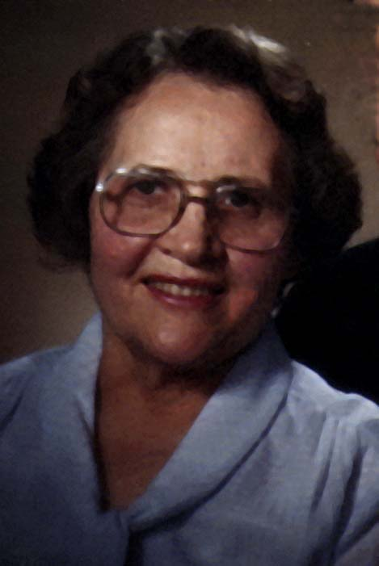

Spring comes late in the mountains of Wyoming. The early winters were severe with intense cold and deep snows, so when the weather moderated it was warmly welcomed by the animals and people alike. Even the earth seemed to respond joyfully as it covered with lush, fresh green grass and mountain flowers.
The birds flocked in from southern winter homes and filled the air with vibrant joyous songs. The evening air caught the night calls as birds went to nesting and the animals called to their young - the gently lowing of the cows, mother sheep bleating for their young lambs, romping across the pastures, to have their supper and settle by their sides.
Farmers singing as they did their evening chores reflected the peacefulness of life in the valley.
It was such a time that a new voice was added to the already well-filled home of Heber Fielding Burton and Mary Delecta Ballantyne as their eighth child - a round faced, 7 1/4 lb. daughter gave forth a lusty cry on the evening of 25th of May in the year of 1914. This brought their daughters to number five while the three sons were to remain as three.
Esther was nearing her fourteenth birthday (Aug. 7), Winfield turned twelve the following day, Stewart turned ten that following Sept. 2, Richard turned eight in October, on Oct. 31, Margaret reached the age of six on June 10, Kathryn was four since January 5, and Minerva had been two since February 6.
There had been considerable concern for the health of Delecta, my mother, for she had nearly given her life when Minerva was born. The doctor had left explicit orders that he should be summoned in plenty of time, but the nurse would not be convinced that delivery was near, so I put forth my lusty cry totally unconcerned that the doctor had not yet been phoned, and the nurse was not quite ready to receive me. But all went well with mother this time, and the whole family showered me with love. Even Minerva gave me welcome when Papa announced to her we had a new baby and she confidently replied, "Two babies now, Papa." - not to be displaced - but she would move over and let me join the family circle.
The name chosen for me was a combination of the names of our grandmothers, "Mary" from my grandmother Mary Ann Stewart Ballantyne and "Ellen" from fathers' mother Ellen Fielding. Both of these were women strong in their faith and testimonies as to the truth and fullness of the Gospel, who had trained their families well to be faithful to all the teachings of the prophets, full of love and charity for God and fellow human beings.
Our home life was joyous and happy. Love predominated, and obedience to parents and the commandments of the Lord became our way of life.
My earliest memories are associated with loving my dolls and the animals of the farm. One memory has been instilled through a story and a picture of me with a baby duck, which as a toddler I had clasped in my chubby hands - firmly held around the neck. The story told says the mother duck hatched 10 beautiful baby ducklings. They were my constant delight and every time I could I would catch one and lovingly carry it around. As a result, every one of these beautiful ducklings died - just too much love from me.
I can remember how much I loved to feed the chickens. We had a log granary with large grain bins. Some holding wheat, and others with oats. Papa had a grain scoop about four
inches deep and seven inches long. I loved to have a little grain in it and go out on the granary step and call "Come chick, chick, come chick, chick, chick." The chickens would come running around me and I would scatter wheat for them to eat.
In the summer we had many birds building homes in the barns, the willow bushes, and trees on the mountains. We also had a pair of bluebirds that made their nest behind a loose board above the kitchen window. I loved to watch them bring feathers and string and grass to build their nest. Then sometimes after the eggs were laid, someone would lift me up so I could see the tiny eggs in the nest. Later I watched the parents bring worms to their babies and heard the chirping of the baby birds as they clambered for the worms. It was also fun to watch the little ones learn to fly. How carefully I helped watch the cat so it would not catch them! The birds I learned to identify were robins, sparrows, killdeer, meadowlark, canaries, swallows, magpies, and crows.
We had yellow roses blooming south of the house and I learned about bees making honey from the nectar. Later on, hummingbirds found our farm but in my early childhood I don't remember seeing them. We also had tall golden glow, big red poppies and hollyhocks.
When haying time came on the meadow our family moved there to a log house with a large bedroom - big enough for all our beds, and a smaller room with a big table and a small stove. All our water had to be carried from the large spring not far from the house in buckets, and heated on the stove. We had a wash stand, with a granite washbasin. The bucket of water for drinking stood by the washbasin. This was also used to refill the teakettle which was kept full of boiling water on the stove to be used for cooking and for scalding dishes. The water for general use was heated in the reservoir which was a part of the stove - built right on to it at the opposite end from the fire box, and in a small galvanized tub which held about two buckets of water.
Our lights were furnished by coal oil lamps which had to be filled each day, and the wicks trimmed. The glass chimneys also had to be washed and dried.
The stove was heated with wood, which had to be chopped and carried in. Part of my earliest work was to help keep the wood-box filled. Another job given me was to keep the wash basin washed.
Our floors were bare planed wood with one or two braided rugs by our beds.
Bathing was done in the round tubs called the number 3 galvanized tub. I'm sure adults had a hard time sitting in them as they grew older. The tub was put in the kitchen and about 2-3 inches of water was poured into it from the stove supply.
In our home, each of us had clean water for our bath. It was carried out in the slop bucket which stood on the floor by the wash basin, and which was the receptacle for all "used" water. Needless to say, with so much carrying of water to be done, both in and out, water was used sparingly.
As I grew older, I observed that in many homes 3 or 4 people bathed in the same water. Our hair was shampooed with soap lather, in a small tub which was placed on a bench or chair. It was sometimes rinsed with water containing a spoonful of vinegar, to help it to be more shiny.
We were taught to brush it many times each morning so we would have healthy hair. Grown women never wore short hair, nor did the teenage girls.
The fat from our meat was carefully saved to be used in making soap. It was melted then lye was added to it and afterward when it was cool it was cut into bars. I remember how forcefully we were told never to touch the lye cans because it could burn us terribly. I've always felt afraid of a can of lye - not an active fear, but a cautious withdrawing timidity.
Sunday was always a special summer day. Our Sunday best dresses were often white with colored wide satin ribbon sashes, and we girls usually had a new pair of black patent leather slippers each spring.
We would have had our Saturday baths so we would be clean to go to the church house and on Sat. night hair would be put into curling rags, though the big sisters usually had theirs in braids.
So Sunday morning we would feel so special in our pretty clothes with pretty curly hair. Then father would hitch the ponies to the big black two seat buggy, and we would all climb in. Because 10 was a bit of a crowd, the boys would probably be allowed to sit in the box behind the back seat and dangle their legs. Then off we would go. Most of the time we wore pretty summer hats sometimes store bought and sometimes frilly crepe de chine or organdy covering wire frames, with artificial cloth flowers, or sometimes small artificial fruit. As a very small girl I wore a white sunbonnet. Once I had an embroidered white dutch style cap with my oldest sister Esther made to match my dress which she made in Home Science class in high school. I well remember the excitement of going to school with her to try it on. I felt so very small and shy. I still have that dress.
Our "church house" had a steeple with a bell on it. The caretaker, Conrad Schulker, a Swiss immigrant I believe (a bachelor who helped his sister raise her children) would ring the bell half an hour before Sunday School time, so everyone would know when it was time to leave. It would ring again at 10 minutes to ten as though to say "hurry or you'll be late." When we arrived at the church the horses would be tied to the hitching post and we would all go inside our pretty white church. It had long brown benches of shiny varnished wood. There was the center section with an aisle down the middle, two small back sections and the section on the south.
The north part of the room was where I liked to go and sit on the little red chairs. Sister Osmond was a plump, sweet kindergarten teacher and tall, slim, quiet sister Wilkes helped her teach. We had a door going out so if we little ones had to go to the outdoor toilet one of our teachers could hurry out with us.
When class time came, white curtains would be pulled between benches and down the aisles so classes would be separated. Then there was quite a hum when all the teachers began giving lessons.
Sister Osmond had quite a few action songs for us to sing. I loved to spread my arms and walk around like a bird singing
"My pigeon house I open wide
and set my pigeons free.
They fly o'er the hills on every side
As happy as can be.
But when they returned from their
merry merry flight
They shut the door and say goodnight.
Carew Carew Carew Carew
Carew Carew Carew Carew Carew.
We also sang "Little Purple Pansies" and "Shine On", "Jesus Once was a Little Child", and "Jesus Wants Me For A Sunbeam". I still love to sing those songs, and feel a love for Sister Osmond and Sister Wilkes.
Sacrament meeting was held not long after Sunday School and I can remember eating sandwiches under the trees in between meetings. Our family usually sat together and I would sometimes get so sleepy I would put my head on Mama's lap and go to sleep. I can remember a gray-haired Sister Bennion used to sometimes pass me a white mint. She said she used them to help keep her awake. I suspected she kind of liked me because she didn't have any girls as little as me.
My favorite joy on the meadow was being able to play with the baby frogs. Mama would let me take a little tub and a small pail to get water with. There was a board across the spring about a 12 inch plank, and I could stand on that to get the water. Most of the time an older sister would help me to make sure I didn't fall in. After there was a part of a tub of water, I would hunt through the grass for the tiny baby frogs, about an inch long, catch them and put them into the tub. Often the tub would be carried to the house to "help them keep track of me" and I would play in the pleasant sunshine, watching them swim and hop. I never liked to see one get lost, because then I couldn't take them "home" when I was through playing. The spring was their home and I felt sure they would be missed if I didn't get them back. The half-grown frogs were much prettier than the pale green babies, but I was too little to catch many of them. They could hop so fast!
Mornings and evenings I loved to go to the corral to watch my father and brothers milk the cows and feed the calves. I would take a tin cup with me and one of them would squirt the milk into my cup until it was full of nice warm foamy milk for me to drink. Sometimes I had a thick slice of homemade bread (without butter) to eat while I drank my milk. My cup would be filled as many times as I wanted.
By the time I was five years old, I wanted to learn to milk the cows too. I loved them and I had watched others brush the bag (the udder) and the legs and stomach of the cow to get rid of the loose dirt and hair and grass so none would get in the milk. Each milk stool had wide board legs with a little shelf to hold a piece of burlap sack to help get the cows clean. Often there was a small jar of grease containing a bit of disinfectant (carbolic acid I believe) to help keep the cows teats soft and heal any small scratches that they may have. This also made it easier to milk the cows. All these preparations relaxed the cow and helped her to let down her milk so it would be easier to squeeze out.
The person doing the milking would sit on the right hand side of the cow, and when the cow was cleaned, would lean their head against the cow's flank (in front of the back leg) and put a hand on each of the two front teats, then squeeze, from the thumb on down to the little finger, first one hand then the other in rhythm. After the milk had been squeezed from the front teats the milker would move to the two hind teats and empty them. Next came the stripping to get all that was left in all the teats. This last stripping was finished using the thumb and finger, because the cream came last and that was what made butter, and gave us cream for our mush (cooked cereal) for breakfast. We also put a little on our bread and milk for supper, to make it taste better.
I had watched people milk cows so many times I was sure I could do it, so when I was five, Papa made a little milking stool "just my size" and mother gave me a little bucket - gold
colored with white lilies painted on it. We had a very gentle cow with small teats that I was allowed to milk. When I had gotten all the milk I could (it wasn't nearly as easy as I thought it would be and my hands got so tired) someone else would finish milking her.
The mattresses on our beds were very different from our mattresses with coils and inner springs, for they were made very much like great pillows. But they were not filled with feathers from chickens as were the pillows. Instead, in the harvest time of the year, when the big threshing machines came to thresh the grain from the heads of the wheat and oats which grew in our fields, the beautiful yellow straw was put in stacks. Then we would take the "ticks" (as our mattresses were called) off our beds, empty out the old straw in the corner of the threshing yard. Next came the filling of the ticks with the fresh golden straw. They would be stuffed full, into every corner and to every seam until they were well rounded. The tick was thoroughly swept then carried into the house and placed on the open link springs of the bed. The bedsteads being made of round hollow iron pipes or narrow iron rod, though mama and papa's bed had wooden head board and footboard, beautifully varnished.
When the covers and sheets were on the bed it looked like a mound. Of course the straw was hollow and mashed down when we laid on it, and must be continually "plumped" and smoothed out (like pillows should be) when the beds were made.
In summer we had smooth percale or muslin sheets on our beds, but in winter, flannel sheets were on the bed which were so much warmer to climb into than cold, smooth sheets.
The clothing I wore was quite different from yours. Hooks and eyes, snaps, and buttons with buttonholes were our fasteners. Zippers were not invented until I had been married for several years. Our clothing was all of either cotton or wool. By the time I was in high school rayon had been made. that was the first man-made fiber.
But to get to the articles of clothing, I wore as a little girl. When the winter came mother and father would buy us some snug warm winter underwear. It was a heavy knit cotton with a fluffy flannel like finish on the inside that was so lovely and warm. It had long legs, to my ankles, with long sleeves and buttoned down the front with a buttoned "drop seat" in the back for toilet purposes. On top of this I had a waist, sleeveless buttoning down the front with a tab on each side at the bottom to which would be fastened long garters for holding up my long wool stockings, which were black, or the "store bought" brown or white ones.
The waist of unbleached muslin which came only to the waist also had three buttons across the front and 3 or 4 in back to which the band of my bloomers (full gathered pants with a band) could be buttoned. These came below my knees and had elastic in the bottom, and as I remember them, were usually made of black satin. Later they had elastic around the waist instead of a band, but it was felt our circulation and health was better if we didn't have tight clothing around our waist.
On top of the waist and bloomers was a flannel petticoat, just straight and flared slightly, with a cotton petticoat over that. The dresses were of a rather warm material, and probably wool, and not very light in color, because they were not to be washed very often. There was a wide variety of colors with checks, plaids, or plain and striped. These came to the calf of the leg. I always wore an apron which could be washed, starched and freshly ironed each week.
We didn't put on clean clothes unless it was an apron any more often then once a week and then after the weekly Saturday bath. I must not forget to tell you about my winter shoes. These were either buttoned or laced high tops which came well up past my ankle, and had a low rubber heel. When they were buttoned, we had a button hook made of metal to help do them up. I still have a button hook among my possessions and the tiny button black high tops (the tops of this special pair were velvet) with white buttons which I wore as a toddler and gave to Alice, and I believe she was the last of my children to wear them as a baby.
This may seem like a lot of clothes, but remember these were the days of homes heated with wood or coal burning stoves, and only the living room and kitchen were kept warm. The doors often did not fit tight and in cold weather a row of frost could be seen at the bottom at times. Most floors only had small carpets on linoleum. Also windows were drafty, so to be comfortable we needed warm clothing.
In this winter of 1973 when fuel conservation is needed I may make myself some warm bloomers and a flannel slip to help keep me warm.
Out-of-doors winter clothes was not so different except for leggings and heavy cloth-topped overshoes, which had matching buckles. These overshoes would sometimes get soaked through if the snow was extremely wet. The leggings were made to extend from the ankle to below the knee and would button around the leg over the high-topped overshoe, to keep the legs warm and dry. It was not uncommon for our toes and fingers to get frost bitten.
Playing in the snow, making "fox and geese" or snow men, or flopping flat our backs and moving our arms up and down to make "angels with wings" in newly fallen snow were great fun, as was coasting on the crusted snow in January and February with our sleds.
When spring came, and the coldest winter was passed, the flannel slip, or petticoat as it was called, could be left off, and the warm wool dress could be substituted for washable cotton frocks. Finally the long-legged, long-sleeved underwear, could be cast aside for another fall. In place of this came combination underwear, which took the place of the waist and bloomers. It was one piece, and buttoned down the back and had a drop button seat. A tab was made on each side at the waist so long garters could be fastened to it to hold up our cotton stockings. Summer shoes were oxfords or slippers, shiny black patent leather was for Sunday best, to be carefully rubbed with vaseline to help keep it from cracking, then rubbed and rubbed to both rub it in and rub it off so dirt wouldn't cling.
Usually we wore long white stockings (often our best dresses were white also) but I remember some knee length stockings with pretty colored bands. Of course the dresses always covered our knees so we were modestly dressed. I remember being reminded to always keep my dress well down over my knees so I would not expose myself. (I wish the girls of 1973 could feel the security of well-covered legs).
Even our play clothes did not expose our legs. The only time we did not wear dresses was if we were hiking and most of the time as a little girl, I still wore my dresses when climbing our hills. I also wore a slip apron over it to help keep it clean.
One of my earliest memories of the flu epidemic of 1918. All schools were closed and no public gatherings were allowed. Sunday activities I do not remember, but I'm quite sure that must have been the beginning of my knowing that if we can't go to meetings we should have home Sunday School, and learn the gospel while observing the Sabbath as a day of rest.
It was solemn around our home when we learned the flu had caused the death of some of the men who were our neighbors. Of course no funerals could be held, but father helped with caskets and burials.
My brother Richard was often the one to help take milk to the creamery. I especially remember him doing it, but I think the older boys must have done it more, because he was only twelve. But I do remember him coming home with the thick "cheese cloth" gauze mask over his mouth and nose, to help keep out the deadly influenza germs. As soon as he came in, Mama would take the mask off of him and put it quickly in the oven to bake and kill and germs that were on it We all stayed close to home - 3/4 mile from any neighbors, and none of us had the flu.
We did have lots of fun though, and lots of skating and sledding down the hills and in the pastures. In the house we could play the organ and sing, hear stories, and share the work.
Probably the older ones had some school studies taught by mother and father, but Minerva and I had wonderful times with our dolls.
The next year she went into the second grade because there were too many first-graders. When I was six, Mama and Papa decided I should have a little time at Mrs. Ellisons' kindergarten during the middle of the summer to help me get used to being away from the family. That was where my friendship with Alleen Holbrook began, and she was my best friend for the next five or six years.
My first grade teacher was Mrs. Ingram. I loved her and liked sitting in the rows of desks all fastened together. I was one of the shortest girls. Mary Black became one of my good friends too.
In the mornings Mama would get me started eating breakfast half an hour before the others because I was such a slow eater.
I always had a bottle of milk in my lunch bucket. My sandwiches were cut in squares so I wouldn't waste any by getting full before my sandwich was finished. Often I had a peanut butter and jam sandwich. Sometimes I had peanut butter and honey. Jam sandwiches were never favorites with me.
During the pleasant fall weather (and late spring) we often walked to school through the fields, going straight south. There were several streams to cross on logs with a narrow footbridge over Swift Creek, the large stream which emerges from the canyon east of Afton, which bears the same name. For this reason, we younger ones, who were given an early start, never were to cross streams without the assistance of the older family members, so if we got there ahead we were to wait. Fathers' sister, Mabel was drowned in Swift Creek at the age of about 16, so we realized streams were to be given extra caution.
I remember one late fall morning when the log was icy and I fell in, (not wholly for I believe I landed on my feet). This experience and cold mornings help to imprint in my memory the large pot-bellied stove which heated our school room. Each room had its own stove, which was supported on 4 legs. The wooden floor was protected from the heat by a large square of metal, so that sparks coming out of the stove and hot coals would not set fire to the floor. The stove was surrounded by a large semicircular metal walls or protector. There was a space (I'd guess) about 2 feet between this and the stove which helped to radiate the heat around the room and protect those who sat nearest, from the direct heat of the stove. It was also a nice warm place to put our hands and backs up against. Occasionally wet socks were hung over the top of it, as mine were the day I fell in. (You must remember these are my childhood memories and may not be quite accurate.)
Each school room had its pile of chopped wood, and each school yard had its big rows of wood to be used for heating the school.
My grandfather William Walton Burton was a polygamist who had married 3 sisters, Rachel, Ellen, and Sarah Ann Fielding, daughters of Joseph Fielding. When the U.S. Congress passed the Edmunds-Tucker Law in March 1887 making polygamy illegal, the U.S. Marshalls came to Utah with instructions to arrest and imprison all men who had more than one wife. So the men went into hiding and if a Marshall was seen word was quickly and secretly passed so the men could flee. Many times they had to leave in the middle of the night. Father said often Grandfather would run out on foot, at night, after telling him where to meet, then Father, or one of the other older boys, would saddle two horses, or take the team and wagon, and take a round-about journey, eventually come to rendezvous or meet Grandfather at the appointed place. Then they would journey into the mountains for several weeks, leaving the families to get along as best they could.
Grandfather Ballantyne was not a polygamist so his home became a place of hiding when Marshalls were too close for men to get away. The home would frequently be searched to see of any polygamists were there. I recall one story (whether it was in the Ballantyne home or some other I don't know) but a man came running in and before there was time to hide him the Marshall was seen approaching the house; so the woman said "Get on your hands and knees!" He did so, and she sat on his back spreading her several full petticoats and skirt over him and began knitting. When the Marshall knocked she called "Come in." He entered and seeing no man demanded permission to search the house. So he quickly searched everything while she calmly went on with her knitting. Not finding a man, he departed and hurried on with his search of the area. Afterwards the man was more properly hidden.
To go on with Grandfathers' trips, it was on one such that he went to Star Valley in Wyoming and having learned that Wyomings' Gov. Warren was protecting the Mormons, because they were home loving, law abiding and made good settlers, decided to move some of his families there. They established a large dairy, a mercantile store and a creamery where they made butter and cheese. Other polygamists joined in settling the beautiful valley, Calls, Gardners, Clarks and Caziers were some early settlers.
So with Grandfather having moved his families there I had many cousins who were Burtons. Ann and Carol were my age, and all of my sisters had cousins their ages so we had good times together.
The Burtons were taught not to quarrel, or swear, or lie, or steal, and to always use correct English. Work was very important to life and happiness. To say we would do something was as good as a promise.
Grandfather William Walton Burton had been a schoolteacher and all of his children loved good books. I don't remember him because he died when I was four years old. Grandmother Ellen died in 1906, so I didn't know her either.
My second grade teacher was Allie (Alice) Burton, Carols' sister. Their father was Uncle Thomas. She was a good teacher, and I had her again as a 5th grade teacher.
School was fun, and if I was sick and couldn't go I always shed bitter tears, but they soon passed when mother supplied me with happy things to do, coloring, playing with my dolls (which I dearly loved) writing, reading, and if I was well enough to be around, I had some work to do such as dusting the chairs and chair rungs, washing the wash bowl, and carrying in wood. I could also play outside.
My third grade teacher was Mrs. Gardner. Sometimes I was allowed to go up the street to get her two young children on Primary days and take them to Primary. The church was just to the west of the school. It had a bell tower and a bell. The bell was always rung one half hour before church began, and again at ten minutes before, to remind everyone it was time to be at church. It was much like a town clock. I think perhaps some people did not have clocks. Many people were poorer than we were.
Father and Mother had both been taught to work, and to mend and take good care of all their belongings - and to pay tithing. "Waste not - want not" was a common saying. Father used to often say "Poor people have poor ways." Many times I have pondered on this thought. It is not always so, but I'm sure there is much truth in it.
Our home was half a mile east of the main road, and the school wagons and school sleighs did not come up our lane, so as long as my brothers were in school, they drove the team and wagon. Hay was kept in the wagon box. The horses would be unhitched and tied to the wagon wheel at the side of the wagon, so they could eat hay while we were in school. At noon one of my brothers would untie them and take them to the stream of water that ran past the school so they could have a drink.
Father had 9-15 cows or more and every day the milk would have to be taken to the creamery to be made into butter and cheese. This would have to be done on our way to school. The big cans of milk would be left at the creamery, then after school we would go back and pick up the clean empty cans.
The liquid left from making butter and cheese is called whey. It was piped out to big wooden tanks behind the creamery. It made very good pig feed, and behind the creamery were two or four long rows of little wooden pig houses and pens. The whey was fed to the pigs. People who took milk to the creamery were also allowed to get whey if they had pigs and chickens, so we usually had two or three old milk cans which were filled with whey.
Grandfather Burton and sons owned the creamery, and usually one or two of my uncles worked there. Mary Blacks' father was creamery manager. So while my brothers picked up the cans and got the whey, we girls used to go into the creamery to see the long vats of cheese being made. By that time in the afternoon the men were running the big screens through the cheese curds cutting it into about 1 inch squares. It tasted very good - and was rubbery and a bit tough. Sometimes they would give us a few cheese cubes to eat.
The creamery was always very clean, and the cement floors always looked freshly scrubbed. There was a big wooden churn for making butter. It was much bigger than I was! Sometimes we bought butter and cheese, but butter was usually churned at home by hand.
The creamery was closed on Sunday, but the trip to take the milk had to be made all other days. In winter, Richard loved to ride the skis - pulled along by a rope fastened to the sleigh box. When I was about eight, I frequently would be allowed to go along so I could drive the team while he rode on the skis.
I enjoyed all my brothers, but the one I drew closest to was Stewart. He always seemed to like to have me with him when he was working with the animals.
In winter the sheep, cows and horses lived outside, and would have a feeding ground. The hay would be pitched with hay forks into the hay rack. I would often sit straddle of the front end hanging onto the center post, while the rack was filled with hay. Then while the team was slowly walking around the feeding ground I would watch the animals running along side trying to get a bite of each fork full that was thrown off.
When the season for new lambs came about March, he would take me around to see the new lambs and their mothers. I would be allowed to pat the soft curly wool, to watch the little lambs sucking their milk from their mothers. It was always funny to see that the harder they sucked, the faster their long tails would shake, as though the shaking of their tails was a way of saying "Thank-you" to their mother while they ate.
Sometimes a mother sheep would give birth to twins. I have never been able to understand why the mother of twin lambs would reject one of them, and refuse to let it eat. When this would happen, the little lamb which was unwanted by its mother, would be fed on a bottle. However, sometimes a baby lamb would die, leaving the mother sheep without a baby to feed. Then she would be gently persuaded to accept a little lamb whose mother had refused it.
Most animals know their baby by smell. It is this way with sheep, and the mother would only feed the lamb who has her smell. So to get her to accept a strange lamb, the skin is taken off the dead lamb and laid over the back of the baby lamb when it is brought to her. She smells her lamb and lets the new lamb nurse. After a few times she seems to recognize the new baby as hers and the skin of her dead lamb is not needed.
When there was not a sheep to accept the rejected, lamb I was often allowed to hold the bottle for the little lamb. I loved to feed little lambs!
I remember one winter night when the weather was extremely cold, Papa came into the house carrying a bushel basket. Some new little pigs had been born - a litter of ten! They had become chilled and Papa was afraid they were going to die, so he had put a grain sack in a basket, laid the piglets in it, covered them over and brought them into the kitchen. With a coal stove, the oven is heated any time you have a fire in it. So he asked mama if he could sit the basket on the oven door. Then he turned to me and said "Mary Ellen, will you stay by the little pigs and pass your hand over them to make sure they don't get too hot? Turn the basket quite often so it will be warm on all sides, and so the little pigs by the oven will not get too hot."
How wonderful! Little pigs are so soft and silky! Their floppy little ears, and curly little tails - tiny flat noses and dainty feet were thrilling to see and feel - but oh so gentle must be my caresses. At first they were quite cold and laid very still, but after awhile when they got warm, they began to stretch and push just a little, and finally there were some tiny squeals as they realized it was time to eat. Then Papa came back in and took them to their mother.
We children were not allowed to go into the pen with the mother pig because we would not be safe. But we could climb on the side of the pen - just high enough so we could see over, and watch as the mother pig lay on her side and each little pig searched and pushed for a teat to suck for its warm milk.
It has always been interesting to watch little animals learn to stand when they are first born. Little lambs stretch and try to stand on wobbly little legs just a few minutes after they are born. I don't remember if they come up on hind legs or front legs first, but often they tumble a few times before they succeed in getting on their feet. When someone is near, they quite often give the little lamb some help. After it has a good drink of milk, strength comes quickly and they can jump to their feet instantly.
Little pigs are more lazy at using their legs. They are like puppies who spend several weeks mostly sleeping.
Little calves are more like lambs. They think their legs are made to be used so they keep trying them out. They are wobbly too, and it takes quite a few tries before they are able to scramble to their feet easily.
One thing different in caring for little calves comes at weaning time. Of course cows are kept so people can use their milk, so usually calves only nurse on their mothers for about three days. When a farmer has many cows as my father did, one cow becomes the nurse cow for several calves. When they are a few months old, I can remember learning to help them drink milk from a bucket instead of nursing. When your fingers are put into a calves mouth, the calf starts to suck them. Gradually you put your hand down into the milk in a bucket - in sucking your fingers the calf gets some milk. After a few days he learns he can suck the milk from the bucket without any fingers.
It was always fun to call the calves in from the pasture at feeding time. I would stand by the fence and call "suck calf - suck calf - come calfy come calfy." The calves would lift their heads, prick up their ears, then give their heads a shake, put their tails in the air and race for the barn, where they would shove and push to see who could get their heads into the bucket first. I would laugh at them and scratch their heads - push their heads away from the calf who was drinking - and marvel at the shiny black and white fur. Father kept Holstein cows with just one or two Jersey cows for the house. Jerseys have more cream in their milk, but the Holsteins give lots more milk.
Spring usually meant some baby colts too. Papa had two or three dozen horses. These were days when cars and tractors were just beginning to be used. We needed 8 or 10 teams of horses to do the farm work. The mares which are the mother horses, had a colt about every two years. The little colts have long spindly legs which are very wobbly for several days, but soon they can trot along beside their mother very gracefully.
When I was about 5 or 6, we had a drought and there was not enough hay to feed all our animals through the winter. Word came that there was plenty of feed in Nebraska so the men in Star Valley organized, put their branded horses in a band and drove them to Montpelier, Idaho where they were put into box cars and shipped to Nebraska. I remember this because that summer a very nice pony had a white spot in middle of her forehead and I had been allowed to name her. Penny was my chosen name. Penny was so gentle that Papa let me sit on her back when she was several months old, and I could ride her around the yard with someone leading her. How I loved that pony! But she was shipped to Nebraska and I guess someone else liked her too, because when the horses returned the next year - we searched and searched, but Penny was not with them!
Another bit of work given to me in summers was to go with my sisters to gather wool from the fences. Sheep seem to like to crawl under fences to eat the grass on the other side. Somehow "the grass on the other side of the fence always seems a little greener" so the sheep will get down on its knees and reach and reach, wiggling further and further - and if the barbed wire happens to be loose enough, they will crawl right under the fence to the other side. Every time they do this, some wool is pulled out and left on the fence. So once in awhile we would go to the places where sheep had crawled from the fences and untangle the wool from the fences and put it into a sack. This would then be taken to Sister Harmisen, to be made into quilts or carded and knit into stockings.
The latter part of our summers was always haying time. Some alfalfa hay fields grew around our home by the mountain, and it was always ready to be cut about the 4th of July. When that was finished the timothy hay on the meadows would be ready. Now my interest passed from frogs to going with the men and my older sisters to work in the fields. Sometimes I would be allowed to ride "Bell", the old horse Margaret was driving on the "gleaning" rake which gathered the bits of hay which fell off at the side of the sweep. Bell was a big roan (brownish red) mare who had a limp foot and was blind in one eye. (I've no idea how she was blinded). She was gentle and patient and I loved her.
Other times I might be allowed to straddle the board seat on the sweep, and ride along as it gathered big bunches of hay to push onto the big fork teeth of the stacker. Other times I watched the sister who was driving the team which pulled the cable and lifted the stacker high into the air so it would throw the hay onto the stack.
These were very important years as I learned how to handle the horses and the different kinds of machinery used in the hayfield. I also learned that all equipment must be oiled every morning so it would not wear out. It was important to look for places on the horses shoulders and other spots where harnesses could rub so sores would not develop. The horses were our friends and very important as they helped to provide the necessities of life and all our transportation. Papa took good care of all his animals and was very kind to them.
When I was nine years old, father felt I had learned enough to begin working so I was given the responsibility of driving the stacker-team. I had learned that strict obedience was absolutely necessary. The team "Bird and Bess" were dependable horses but the driver had to follow instructions carefully or there could be big trouble, or the man on the stack would have a lot of extra work.
When the stack was just getting started the team must go slow at the end of the pull or the stacker would be tipped over and broken, which would stop everyone's work. When the stack was high enough for the arms of the stacker to hit the front of the stack, the man stacking hay would tell me where he wanted the hay, in the front, middle or back end. Then I had to learn how fast to make the team go to throw the load of hay where he wanted it. I also had to learn to stop the team at the right time so the stacker arms would not hit the stack too hard, as it might crack them. The stacker was made of wood, so I would run along driving the team to the end of the cable, then slowly back up the team bringing the stacker teeth back to the ground gently for the next load. I drove the stacker team every summer for about 3 or 4 years. Then Carol Parsons, a neighbor boy whose father had died during the flu epidemic of 1918 was old enough that father hired him to drive the stacker team and I drove the dump rake or side delivery rake.
It was while driving the side delivery rake when I was about 14, that I had an experience which made me realize my Heavenly Father must be watching over me. The side delivery rake was one with 3 long rows of steel teeth which went out about 10 feet at an angle behind the big front wheels. They were turned by big cog wheels set into the wheels in a metal casing or box. The cogs could be thrown out of gear when the driver was not raking hay, so the rows of teeth would not go round and round. It was these that raked the hay into big long rows.
On the day of my experience I was driving a very lively team. One horse was a race horse and the other was a young horse without much experience - still much of a colt and very excitable. Several days before I noticed that the bolt which held the seat on which I sat was bent. The seat was above the end of the 3 rows of teeth, and fastened to the axle between the two big wheels.
The field I was raking was hidden by some willow bushes, and others stacking hay beyond the bushes could not see me. I was raking the hay into long rows holding a tight rein on my lively team when suddenly the wheels locked and would not turn. This excited my team and they began to run. With great effort I managed to throw the teeth out of gear which released the wheels and I was able to quiet the horses. I drove to a willow bush, unhitched my horses and tied them to a bush. I then went to get my oldest brother Winfield who was stacking hay. When he investigated he found that in some unexplainable way those cogs had become unlocked in their metal casing. He had to take it apart and fit them back into place. While he was doing this, Myron Dutson, a slim little boy of about 5 came and climbed upon the seat of the rake. As soon as he at down on it the bolt broke, and he and the seat fell down into the middle of the teeth. Had I not been protected, that bolt would have broken while I was driving the rake, and I would have been killed as my team wildly dashed across the meadow. I offered a prayer of thanksgiving and felt I must always live worthy of such loving care.
I want to tell you more of the family of this little boy Myron Dutson. His parents, Angus and Isadora McCombs Dutson, had been working for us for several years. My first memory of them is of one rainy summer day a young girl came running across the meadow to our log cabin to say Dutsons' baby had just died. I was small and didn't know the family too well then. They lived in one of the Burton houses by the big dairy barn on the meadow. They were often invited to Sunday dinner and I learned to love their children, Myron, Ellen and Max. Sometimes they would leave the children with mother and I would help look after them. I was so fond of babies - it was a special delight. After a few years Angus rented the Michaelson place next to our big dairy barn and moved into that house, which was bigger. Then one Thanksgiving time he got sick with pneumonia. The children were brought to our home by the mountain and the Saturday after Thanksgiving Angus died.
When Myron got up mother gently told him his father had died and gone to heaven. Myron told her he already knew it because early that morning his father had awakened him. He said his father was standing in the air, just above the bed. His father told him that he had to go away and instructed Myron to help his mother look after the family. At Angus' funeral, my father told this story.
Several years before, Angus and one of his brothers had promised to support each other on missions for the church. Angus paid his brothers' expenses while he was gone, but after the brother got home he did not help Angus so he could go on a mission. Angus was very sorry he could not be a missionary. But Angus married and was very happy. However, 3 years before his death, his father, who had been killed by a tree falling on him when Angus was just a youth, came to him one night and told him to prepare to go on a mission. He would return for him in 3 years. Angus was sorrowful - his family had no home - they would have no money to pay the rent. Finally he had come to Papa and told him what his father had said.
My father promised that if he could not get a home before he died, he would build one for the family. Father built a home for the Dutson family next door to her parents in Grover, Wyo. and I believe gave her a cow and kept her supplied with hay. He always helped to see they had what they needed.
Myron got rheumatic fever and died when about 14. His mother had remarried but she died a few years later. Angus and Isadora had been married in the temple, and were a good family, so I know they must be together now.
This experience has helped me to know of the reality of the spirit life, and that what we do here prepares us for our life in the spirit world.
I have always remembered Angus as a very kind man, loving and gentle, who had many funny stories and loved to play the harmonica. He played it better than anyone I have ever known and when he played, his dog would sit outside on the doorstep, point his nose in the sky and howl and howl!
Some of the fields around our home on the mountain grew wheat, oats, and barley. The harvester would cut into the grain after it was golden, and tie it into bundles. The men would then stand the bundles 3 or 4 together to dry.
The growing season in Star Valley is short, frost usually killing the flowers and gardens by Aug. 20. Sometimes it was October before the grain was cut - if I remember right. I remember once when the grain was in the shack, that a snow storm approached so I was asked to go out and hold the lantern for the men while they pitched the bundles of grain into the hayrack to haul it into the barn before it got wet. We worked late that night and snow was falling before we were through, but it was exciting and fun to watch the men and the snow and the long shadows dance in the light of the lantern.
When I see grain in the shalk I think of that night and the poem "When the Frost is on the Punkin and the Fodder's in the Shalk" written by James Whitcomb Riley I believe.
Living at the foot of a high mountain gave me lots of opportunities for mountain climbing. These were mountains which gave good pastures for sheep and the sheep had made many paths as they went back and forth across the mountainside. It was easy to run along these sheep paths, and follow them to the small canyons which nestled into the mountain above our home. The canyon named Lily Hollow was my favorite. It was the closest one and I dearly loved flowers and could find my flowers in its shade and on the slopes by it. There were small lilies, buttercups, mayflowers, bluebells, stars, and sunflowers. We girls would often be allowed to go for a climb if we would promise to be very careful as we crossed the small footbridge across the flume of the canal which flowed at the top of the field. This canal divided into an upper and lower canal, carrying water from Swift Creek to irrigate the farms on the east benchland north of Afton. The flume to the lower canal carried the most water and made a noisy rush as it fell into the big round pool at the bottom. This pool was about 12 feet deep - and the water looked greenish blue as it stirred tumultuously around before flowing on to the north to give water to people, fields, and animals.
The upper canal was smaller and sometimes when the head-gate was not allowing much water to flow through, we were allowed to go wading in it. The water was cold, but it was fun.
I remember one Monday late afternoon, we girls decided it would be fun to climb to the top of the mountain. I had been up a long way - but never clear to the top. It had been a busy day, and we had worked well, so Mother said it would be alright if we would be careful. I was about 10 years old. So Margaret, Kathryn, Minerva and I happily made the climb. We chose to follow the ridge up which rose between Lily Hollow and Red Hollow. As we neared the top, it was so steep we had to go on hands and knees, using the scrub bushes and grasses to help. Finally we reached the top and as we stood on the ridge, we could look down into the deep canyon on the other side. Father had often sung the song
"The bear went over the mountain
The bear went over the mountain
" " "
To see what he could see
" "
The other side of the mountain
" " "
" " "
Was all that he could see.'
I think we sang that as we looked down the other side. By the time we reached the top, the sun had sunk behind the hills across the valley on the west and dusk was descending so we didn't stay long at the top.
We decided to return by the big tree which was on the slope across to the north from Lily Hollow. This tree had stood like a sentinel all by itself all my life, but I had never stood beneath it. As we reached it, in the gathering darkness, we could see where many animals had slept beneath it on the thick bed of pine needles and pine cones, deposited through the years. It still stands but by now its pine nuts have found some soil and a few other trees have grown up around it.
But that night its thick branches and strong trunk rose alone, among the small bushes, furnishing protection for the birds. An owl rose as we neared and hooted, then undoubtedly returned to sleep after the night flight.
It was a lovely summer night. The dark night sky sparkled with thousands of stars. We could see Pliades - or the Seven Little Sisters, the Big Dipper, and the Little Dipper.
And far below we could see the light beckoning from our kitchen window where mother had placed it. We had seen her earlier standing by the house waving a white dish towel - letting us know she was anxiously watching for her precious daughters.
We picked our way carefully down the mountain, followed the trails to the canal crossings and at length arrived home to be welcomed by loving parents eager to hear of our adventures while we ate our supper of bread and milk and cheese.
As we lay in our beds, weary but filled with exhilaration from our accomplishments the owls hooted and called, and the coyotes visited across the mountains with answering howls, we knew the joy of loving and understanding parents who would always be concerned for our well-being.
One of the night sounds I always loved to listen to was the rushing water of the canal as it dashed down the flume into the pool. If one listened closely especially in the fall, it grew louder and softer as though breathing. This was because it came from a large underground cavern. This was about 7 miles up Swift Creek Canyon. I visited it once as a young teenager, along with my brothers and sisters. When we reached the head of the stream, we climbed up the mountain to where the water came out, we could understand why it seemed to breathe. It was fall, when the water level is lowest. The hole was 8 to 10 feet across and 3 to 4 feet high. The water would gush forth for about 15 minutes, then stop for the same period of time, while the underground cavern refilled with water. As the time came near for it to start gushing out again, there would be a gurgling, which got louder and louder, then finally with a mighty burst it would gush forth and tumultuously tumble down the mountainside in its rocky bed. The rocks in the bottom of the stream were worn round and smooth - all corners had been worn away by the ever rushing waters.
Once when the water was not running we rolled some stones into the opening. We heard them roll then drop to a ledge below, roll again, then finally drop from another ledge and splash into the water.
Swift Creek furnished water for many homes and farms. It also has been harnessed by a dam and power plant so it supplies electricity for all of Star Valley.
I mentioned Lily Hollow and Red Hollow. I picnicked many times in Lily Hollow, under the Quaking Aspen trees on a lunch of bread and butter sandwiches, sometimes with a carrot. It was named for its flowers. I would go there with sisters, or a cousin, or a friend.
Red Hollow was so named because of the red clay in the mountain there. Far up in Red Hollow there was a spring of water and my father said he wanted to pipe it down so we could have water in the house. I think they finally did while I was in college, but I'm not sure if they used that or pumped water from the streams which came from Swift Creek.
The mountains furnished lots of pleasure in the winter too. As the January and February days warmed, the snow would begin to melt and pack. Then the cold nights would freeze it hard enough for us to run on it. This was always exciting. Many times we would get dressed at 6 a.m. - or earlier, into our warmest clothing. Then we'd get sleds and toboggans and hike to the top of our fields by the canal, lie down on our sleds and coast nearly to the fence by the pasture near the barn. Sometimes we would sit up and two ride together. The toboggan would seat 6. Everyone would have to sit straight or if it started off to the side, it could be guided a little by leaning toward that side. Oh the shouts and laughter if people leaned too far and it tipped over spilling everyone on the hard snow! Sometimes there were some skinned noses and occasional tears. But a child had to try to be brave if he was to be permitted to play with the big folks.
Sometimes on Saturdays some of the school teachers and friends of my older brothers and sisters would come too.
As I got to be 10 or 12, my sisters were not interested in coasting and frequently I would go by myself with our dog, Tip for company. He was great fun. We would climb to the top of the field, then Tip would take the sled rope in his mouth and I'd lie down. As soon as I started he would run at the side, carrying the rope. When he decided I had gone far enough he would stop short and brace his legs. That would tip the sled over and I'd roll off. At that moment he'd drop the sled rope and run as fast as he could go to the top of the field - then stand and pant, mouth open, tongue hanging out, as though laughing because I had to pull the sled up the hill.
These long winter evenings were filled with love and companionship. While men were finishing chores we'd gather around Grandmother Ellen Fielding Burtons' organ, and one of the girls would play hymns and we would sing. "Love at Home" and "Count Your Many Blessings" were favorites. Christmastime brought "Away in a Manger", "Silent Night", "O Little Town of Bethlehem", "It Came Upon a Midnight Clear" and "Jolly Old St. Nicholas".
We sang before we went to bed, and sang as we worked. You can't have cross words while you are singing and we were happy.
If we did get cross with each other and quarrel, Mother would put one in the kitchen and one in the living room. "If you can't be happy there is no use being together." And she'd keep us apart until we could make up, forgive, and settle our differences so we could be happy.
It was on this old organ, which we pumped with our feet while we played, that I started taking lessons when I was in 5th grade. Margaret was my teacher.
When I was in the sixth grade a new elementary school was built. There were enough rooms that one could be used as a music room - and some could be used by the High School. The school board bought 8 pianos and hired a piano teacher to teach piano classes. We could have a half-hour lesson every school day for $18 a year.
Mother and Father felt we girls should all take piano lessons. Eighteen dollars was a lot of money in those days when a mans' salary often meant only $60 a month for teaching school, or could work for $1 a day. So mother decided to start raising turkeys. We girls would help and thus earn our music lessons.
Winfield had a violin and Stewart had a cello. Richard was more interested in sports like basketball and football. But the farm work took too much time for them to do much practicing.
It was about this time that father became interested in raising silver foxes. My brothers were becoming of missionary age and they all needed some college education. This probably was the reason for needing to increase the family income. The sheep brought in quite a lot, but fox pelts could sell for $200 to $400 at that time.
Foxes are interesting. They have pointed noses, beady black eyes, long bushy tails, and the silver foxes had a white tip on the end of the tail. Their fur was black with silvery white hairs sprinkled along the back. They had a timid bark, and were very nervous, always pacing back and forth in their big pens which were completely enclosed with fine wire mesh.
There had to be about a 12 inch space between the pens so the foxes wouldn't fight. Sometimes they would chew the wires and make a hole. If the holes weren't mended they could get into a fight. There was only one fox to a pen except at mating time. The male fox, which is the father, was not left in the pen, but was taken out before the babies were born. Baby foxes are called kits. No one was allowed to go near the pens except the man who fed and watered the foxes, as the time neared for the kits to be born, or for several months after. If a mother fox is frightened when her kits are very small she will eat them to keep them away from harm.
One day two foxes got at each other through a hole and the one almost ripped the fur off the head of the other. It was summer and the flies laid their eggs in the wound. Stewart had me help him clean it up and sew it back together. It got well.
Wash days were very different in the years before we had electric motors. The white clothes were put to soak the night before in a round tub of cold water. Soap was rubbed on the dirtiest places. The next morning hot water was used to warm up the tub of cold water, then the clothes were scrubbed on a corrugated metal board. Afterwards they would be put in a washing machine which had a crooked rod which went across the top and through the middle of the lid, down into the tub of hot water. The soap would be chipped from the bar tied into a cloth bag and put into the hot water. The clothes were taken out of the scrubbing tub, the water rung out by twisting, then shaken to loosen and placed in the washer. The rod over the top was then moved back and forth, back and forth to swish the clothes through the water. After this they were sent through the wringer with one of us turning the handle while mother or a big sister carefully placed the clothes into the wringer, making sure the buttons laid flat so they wouldn't be broken or torn off. The white clothes were then dropped into the boiler which was on the stove and boiled for 10 minutes or more, after which they were lifted out with a stick onto the boiler lid, again put through the wringer and let fall into warm rinse water. After a good rinsing by hand or with a plunger they went through the wringer again into the cold bluing water. They were then rinsed, put in the wringer, and into the clothes basket ready to be hung on the line outside. Wash day was hard work. In bitter cold winter weather the clothes would freeze dry then be brought into the house and hung over furniture or short rope lines until completely dry.
Washing was only done once a week. All water had to be carried in, heated on the stove, and carried out again. Water in the washer wasn't changed. White clothes were washed first, then light colored, then dark colors. Everything had to be ironed.
We appreciated clean clothes.
Ironing was different in those days too. Aprons, dresses and best shirts and blouses all had to be starched. There were no permanent press materials.
The clothes to be ironed were sprinkled then put into a big basket lined with cloth, and wrapped tightly together so they wouldn't dry out. This was usually done the afternoon before ironing day. The irons had wooden handles which could be removed, we had one wooden handle for 3 irons. The irons were oval shaped - pointed a bit at the ends and about 3 inches thick. These were placed on the coal stove to get hot. Then the person doing the ironing would clamp the handle on, carry it to the ironing board and iron until the iron was too cool. It would then be returned to the stove and a hot one clamped on to the handle.
We had to be sure the wood was put into the stove frequently or the fire would go out. This meant the wood box needed to be kept filled or we would run out of fuel for the stove. Father and the boys kept wood chopped for us. Often they would bring in a big armful as they came to eat. They were very good to us. We girls also had to fill the wood box late each afternoon, and gather kindling and a bucket of chips so there would be no problem in starting the fire when mother and father got up. During the coldest weather, when the thermometer would register 10 below or colder - even getting to 40 or 50 below, father usually banked the fire in the heater so it would not go out completely, and so the house would not get so cold. The bedrooms were never heated.
During the cold weather the thermometer often remained below zero for several weeks even during the warmest part of the day. The windows would have beautiful frost pictures -ferns and trees especially, which were fascinating. There would be frost inside on the bottom of the doors going outside. Mother found it was hard to keep her feet warm. Father bought her a pair of sheep-skin boots she could wear over her shoes in the house. These helped keep out the cold.
When I was about twelve, Aunt Frances, wife of Uncle George F. Burton passed away, leaving 6 little children. The youngest was a baby girl named Fern who was just a few weeks old. The oldest son, Alva was about 13. Uncle Chris Burton and Aunt Mamie had lost a baby, so they took baby Fern. Alva stayed with his father, and the other kids, Claude, Mary, Marjorie, and Melvin came to live with us for a few months.
Our 4 room house with an unfinished attic was really full. I think Winfield and Esther were both in Logan going to school. I can remember helping the little children get dressed in front of the heater. That summer they went back to live with their father.
We didn't have a very big house but we had lots of company. In summers our aunts and uncles and cousins would come from Utah and stay several days.
Mother and father always had extra quilts, and some of us children would sleep on the hay in the top of the barn, with our cousins. It was great fun.
We also had a grainery by the house which was used as a bedroom in the summer. We called the grainery a tent because it had a canvas top. I remember one night when we went out to the tent to go to bed that my sister Kathryn threw back the covers and sat down without looking at the bed, and sat on a bumblebee which had gone to bed in her bed. After that we always looked for bees.
One night I was told to go to bed and when I touched the covers I heard a bee buzz. My older sister came to see if I was in bed and I was not - I was afraid to get into bed. She looked and didn't see one, so said I must have imagined it. I started to get into bed and heard it buzz again. So she turned the covers clear back, one at a time and finally found the bee between the two quilts down at the foot.
One day I had been playing at Aleen Holbrooks. Mother phoned a couple of times and told me to come home but I was naughty and kept on playing. Finally Aleen was called in to dinner. Her mother wouldn't feed me because I was supposed to go home. When I got home Mother had saved my dinner. While I was eating, a bumblebee stung me on the top of my foot. Mother said that was my punishment for not coming home when I was told.
A year or so after this, I had another experience with a bumblebee. I loved to read. After my morning work was done Mother let me go upstairs into the attic to read. When dinner was ready I started to climb down the ladder (which was the stairs) and heard a bee buzz. This made me shudder. When I shuddered, it pulled the clothes tighter across my back and squeezed the bee which had crawled down my back while I was reading by the open window. The bee stung me and I dropped to the floor screaming. Mother ran to see what had happened. I cried "Bee down my back!" She tore my dress off and there was the bumble bee. It had stung me in 8 places. For many many years I was afraid of bees - now I understand them and have conquered my fears.
Telling this story reminds me of an accident I had when I was about six years old. Father had a low cart I wheeled for hauling the big cans of milk from the barn to the ditch where they could be set into the water to cool the milk. The cart wheels were almost as high as my shoulder. One day I tried to climb the spokes of the wheel - one foot on each side. As I neared the top my weight made the wheel turn which threw me over it, hitting my head on the open end of the pin which held the wheel on the axe. One side of the pin pierced the edge of the top of my cheekbone below my left eye, and the other side pierced my head just above my eyebrow.
Margaret carried me into the house. Blood was over both of us. Mother phoned Uncle George at the Burton Mercantile Store and he got on a horse and brought some iodine for disinfectant and some gauze tape. She cleaned me up and painted the wounds with iodine then bandaged my head. The next morning my eye was swollen shut, but my cuts healed without problems.
I had measles when I was about 3, with the rest of my brothers and sisters. I remember a doctor coming to see us and I was afraid of him and crawled way back in the corner under the bed. That's all I remember of the measles.
I had chicken pox and mumps too, but can't remember when. I had whooping cough when I was about 7. It was late spring and some friends came to see mother who had a little girl. I wasn't very sick, and mother said I could stay outside and talk to the little girl if I would stay on the opposite side of the doll buggy, and turn my head away if I had to cough. The mothers said the sunshine would kill some germs.
In winter we were often bothered with colds. Mother would rub our chests with mentholatum and put hot cloths on our chests. If we had a sore throat, she'd put either a hot cloth or a cold cloth around our neck. Sometimes we'd drink hot sage tea with cream and sugar in it. At night we'd soak our feet alternating between hot water and cold water. Then we'd go to bed with a heated rock wrapped in flannel to keep our feet warm. Mother was a good home doctor and I don't remember any of us getting pneumonia.
When the diphtheria and smallpox vaccines were developed we all had a vaccine and inoculation. That was all the diseases they had prevention for in those days.
Our grade schools usually had an operetta every winter, put on by the 7th and 8th grades. When I was in the eighth grade the operetta was about a white indian boy. I had one of the leading parts, that of an Indian mother. I sang a song about my little papoose.
"Little Papoose. My little goose.
How your eyes shine up into mine.
Close them up tight. Sleep through the night
My little Papoose.
Father's away in mountains wild
Searching for game for you my child
Soon he'll return laden with furs
For you my dear papoose.
(The first 4 lines were then repeated)
The next morning after the performance I was all red with a rash. Scarlatina. I was glad I waited to show until the performance was over. Mother bought me some water colors and a water color pad of paper. I remember sitting in my gold iron baby bed painting pictures. That was the last year I slept in my large crib. By then my feet stuck through the bars. For many years Minerva and I had slept in it together, in Mother and Fathers bedroom because there were no other rooms and no other beds. Finally they got a single cot and put it in front of the long shelf with curtains hanging below, which was our clothes closet.
I forgot to tell you about another source of music in our home. About 10 years before I was born my father had bought a phonograph for the family for Christmas. The phonograph was the very first record player. It was a little wooden square box about the size of an overshoe box. A handle was in one end, and there was a round steel cylinder on top, about 6 inches long. The record was a hollow cylinder which fit over the steel one. We wound it up with the handle, turned it on and placed the needle carefully on the end of the record. The sound came out through a great big tin horn shaped like a morning glory which was fastened to the box. We enjoyed such records as "I Dreamt that I Dwelt in Marble Halls", "Sousas March", "The Stars and Stripes Forever", and "Sonny Boy". These were the days before radios and television. It was wonderful to have a phonograph to play. Not very many families had one. Uncle Stewart had some very nice building blocks and I used to sit on the floor and play with his blocks and listen to the phonograph.
I remember one cold December about a day before Christmas, Papa said he thought we better not have a Christmas tree that year. I was alarmed. "Papa - it won't even seem like Christmas without a Christmas tree!" He said he had forgotten to get a permit from the Forest Service to cut a tree. I told him I'd gladly walk the two miles to town for the permit if we could just have the tree. It was a very cold morning but I wasn't afraid of cold. So I dressed warmly, took the $1 to pay for the tree permit and with a scarf wrapped around my neck and face leaving room for my eyes, I hurried to Afton and got the permit.
The sun had warmed the air considerably by the time I returned so the bitterness of the cold disappeared. I had 10 cents with which I could buy Christmas presents. I bought a powder puff for one of my sisters. When I got home I couldn't find it so I turned around and went back to look for it. It was still in its paper sack, lying in the road and only a little over a half mile from home.
Some of you may wonder why I didn't ride a horse. I wasn't a good rider, and our ponies were quite fast. I had a hard time getting on once I was off. I preferred walking, I kept warmer that way too.
Winter months were the times father went to the mountains to cut trees and bring the logs home for our years' supply of fire wood, fence posts and lumber. Sometimes he went alone when the boys were in school. I recall one winter. The days never warmed above 30 degrees below zero. Father couldn't wait for warmer weather because then there would be danger from snow slides. He had a big brown fur coat made from bear skin or horse hide - I don't know which, but its fur collar stood up around his head. He had a warm cap with ear flaps which went around the back of his head. He had big fur lined mittens too. The logging sleigh didn't have a box, the logs being placed on the heavy bars which went between the runners, front and back. I remember how mother would watch down the lane as darkness came in the late afternoon, hoping he was coming home safely. He would nearly always be walking, driving the team from the side of the sleigh piled with logs. His horses brown fur would be heavily frosted and every breath made a little cloud. His fur collar would be white with frost from his breath, often with tiny icicles hanging from it. His nose hairs would be white and also his eyebrows. Often he would be flapping his arms to keep warm. The horses knew the way home and he could loop the lines over his arm and let them drive themselves when he got off the main road. He went about 8 miles to get wood. Most men went to the mountains for wood and I'm sure he worked with neighbors and sometimes with his brothers. He usually got wood also for Lettie Parsons and Hannah Walton, two widowed neighbors, sisters, who lived about 3/4 of a mile from our home.
One of the Saturday activities of the men was to take these widows a load of hay for their cows if they needed it, and see that they had meat and vegetables and flour. We had a good root cellar which had beets, carrots, potatoes, onions and sometimes cabbages. I think the boys sawed the wood for the widows too. Sister Parsons had 3 children, Siota, a girl 2 years younger than me, Karol, a boy, and Adeen. Their husbands had died during the flu epidemic of 1918. When Karol was old enough he came up on Saturdays and learned to work with the men.
Much of our hay had to be hauled from the meadows, 3 mi. away. Sometimes they would make 2 trips on Sat. One of the reasons Angus Duston worked for us was so he could feed the animals on the meadows. Many of the young horses and cattle were pastured there by Salt River and needed to be fed there.
With all of us in school, there were many lunches to fix, and mother baked 8 loaves of bread every other day. She had one big black pan which just fit the oven. It would hold eight loaves. She had a bread mixer. Often the bread would be mixed the night before at bedtime and be allowed to rise all night. Next morning she would mix it down, put biscuits in the pie pans, set them in the warming oven above the stove to rise, and we'd have luscious, fluffy, hot biscuits for breakfast with homemade butter.
Churning the butter was often done by us girls. The sweet cream would be brought to the right temperature by letting it stand in the warm room. Mother had a butter thermometer which told her when it was ready. Then it would be placed in the glass churn and we would turn the handle steadily which made the wooden paddles go round and round until the butter started to break. That means until it starts to separate into little balls. Then we could see big bubbles of buttermilk splash as the butter gathered in chunks. When it was all gathered, mother would lift it into a bowl, take the wooden butter paddle which had been scalded and mix the butter back and forth to squeeze out all the buttermilk. The butter would then be washed with cold water, mixing the water through with the paddle two or three times until the water was not milky. All the water was then pressed out and salt was added and mixed. Some people thought cream had to be sour to churn, but I knew better because we always made it from sweet cream.
I must tell you about our yeast. We didn't buy it from the store. Mother always saved a start of yeast from each baking, about a cup of liquid. It would be kept in a quart fruit bottle in a cold place, until the morning it was needed. Then the bottle would be filled with warm potato water and a tablespoon of sugar added. It would grow and get bubbly then mother would put it into the bread flour.
Mother was very clean in her housekeeping. The floors were swept after every meal, and washed every Saturday or more often. Hers and fathers' bedroom had a flat woven carpet on the floor. Often in winter a little snow would be scattered on it then swept up. This would pick up the dirt and lint without raising a dust.
Our bed quilts were washed every summer. She kept a quilt top on the end to help keep the end of the quilt clean and so it would not wear out so often. The was washed about every month. It was tied on with heavy string.
The beds were always to be well aired before they were made. In cold weather, they would be made a quilt at a time. A hot fire would be made in the stove, and doors to the bedrooms opened to warm the rooms. About every 15 minutes another quilt would be laid down. This put a cushion of warm air between every quilt, and the beds were much warmer then.
Once in a while the quilts were taken outside and shaken to get rid of dust and fill them with fresh air. Fresh air is warmer than stale air.
Our coal oil lamps used to tell us when we needed fresh air. If we were all sitting around the table the lamp flame would gradually get smaller and dimmer and more yellow as our breathing used up the oxygen in the air. Someone would then open the door, fan it back and forth and the lamp flame would brighten again.
The songs we sang were not all hymns. Some favorite winter songs were
Jackie Frost Jackie Frost
Came in the night
Left the meadows that he crossed
All gleaming white.
Painted with his silver brush
Every window pane
Kissed the leaves and made them blush
Blush and blush again.
Jackie Frost, Jackie Frost
Crept round the house
Sly as a silver fox
Still as a mouse
Out our little Janie came
Blushing like a rose
Up jumped Jackie Frost and
Nipped her little nose.
Another was "My Papa bought me a candy pig"
My papa bought me a candy pig
with four little sugary toes.
With one pink ear and one black eye
And the roundest, sweetest nose.
At first I put him on the shelf
And kept him clean and white
One day I licked some pink away
And then I took a bite.
I only meant to eat his tail,
But my what a lovely meal.
I kept right on till all was gone
But a poor little sugary squeal. Eeek! Eeek!
I also learned one about a little silk worm.
A little silk worm, one summer day
Curled up in a mulberry tree
Ate the tender little leaves
Till he was as fat as could be.
He glued himself tight to a fence
And curled up in a heap.
Covered up his little head
And soon fell fast asleep.
A Chinamen came along one day
And spied the little cocoon.
Picked it up, took off its coat
And sent it away to the loom.
Now where do you think my little child
This tiny silk coat could be?
Just look at mothers new silk gown
Next time she goes out to tea.
We also enjoyed Jingle Bells. It had lots of meaning for us because we rode in a big sleigh pulled by horses. The hay in the bottom kept our feet warm and we usually had lap robes over our laps as we sat on the boards across the sleigh box. Some neighbors had bells on their horses harness but we didn't.
A childhood Christmas song was:
Old Santa Claus sat all alone
His pipe upon his knee.
A funny look about his eyes
A queer old chap was he.
His queer old cap was twisted, torn
His wig was all awry.
He sat and mused as lost in thought
As time went flying by.
Santa Claus who knows no danger
Over all the world a ranger
Everywhere a welcome stranger
Speeds afar on Christmas eve.
On Christmas morning I used to run outside to see if I could see reindeer tracks in the snow. Our tree was decorated with long ropes of popcorn - which were eaten the days after New Years, and with paper chains, and silver tinsel ropes. We had a few shiny balls and a little red ribbon tied around the necks of about 12 little china dolls. I gave the last little doll to Mary Jeanne as a keepsake. Mother had sent the little dolls to me in my Christmas box the first year I was away from home for Christmas.
Our tradition of white flannel christmas stockings was begun by Grandmother Ellen Fielding Burton. She made the stockings for her grandchildren and mother made stockings for the rest of us after she had died.
A song which was not a Christmas song but which I have always enjoyed is
Good morning merry sunshine
How did you wake so soon?
You scare away the little stars
And shine away the moon.
I saw you go to sleep last night
Before I said my prayers.
How did you get way over there
And where have you been staying
I never go to sleep dear child.
I just go around to see.
The little children of the east
Who rise and watch for me
I waken all the birds and bees
And flowers on my way
But last of all the little child
Who stayed out late to play.
Many times I have sung the shoemaker song to my grandchildren. Do you want to sing it with me?
There's a queer little man in a queer little house
Over the way you see
He sits by the window and sews all day
Making shoes for you and me.
A rap-a-tap a tap
A rap-a-tap a tap
Hear the hammer tit-tat-tee.
A rap-a-tap-a-tap
A rap-a-tap-a-tap
Making shoes for you and me.
He puts his needle in and out
And his thread flies to and fro
With his tiny awl he bores a hole
Hear the hammer busy blow.
Repeat chorus
I wish I could remember the end of the song about a mother hen. I substitute the end of the third verse.
There's a queer little house
And it stands in the sun
When the dear mother calls
The children all run.
But they come back at night
And the children are fed
And tucked in to sleep
In a soft feather bed.
This queer little house has no
Windows nor doors.
Its roof has no chimney
Its rooms have no floors.
But under its roof they are cozy and warm
Though the cold wind may whistle
And bluster and storm.
In the daytime this queer little house moves away
And the children run after it
Happy and gay.
But it comes back at night
And the children are fed
And tucked in to sleep
In a soft feather bed.
The story of this little house is all true
I have seen it myself
And I think you have too.
You may see it today
If you watch the old hen
When her downy wings cover
Her chickens again.
I enjoy a mother hen and her chickens. It is always fun to see the little fuzzy heads sticking out of the feathers. Which reminds me... have you ever watched a bird drink water? Watch next time. A bird doesn't swallow water. He just lifts up his head and lets it run down hill.
Families who have radios or televisions going all the time miss a lot of joy in singing. We not only liked to sing but we also enjoyed poetry. Mother and father both loved poetry and mother would often recite it from memory while working. Mother knew quite a few lines from Shakespeare and Tennyson and Stevenson. Often in June she would quote:
"What is so rare as a day in June
Then if ever come perfect days.
When heaven tries earth - if it be in time
And over it softly her warm ear lays.
Whither we look or whether we listen
We hear earth murmur
Or see it glisten"
That is as much as I remember.
We had a book of Rhymes of Childhood by James Whitcomb Briley, with the Bear story and the Hired Man and Little Orphan Annie, and the Old Haymow. I've lost the book or I'd read these for you along with When the Frost is on the Punkin. We had books of Wordsworth poems and Edgar A. Guests.
One of the best poems I've always liked is:
It takes a heap o livin
In a house to make it home
A heap o sun and shadow
And ye sometimes have to roam
Before ye really 'preciate
The things ye've left behind
And hunger fur em somehow
With em always on your mind.
That's part of it, and how true it is. One poem mother used to recite while doing dishes was:
"Somebody didn't wipe the dishes dry
How'd I know? Because I saw them cry.
Crying as they sat upon the shelves
Crying and they couldn't help themselves.
They made no noise
Each one was in its place
But two big tears rolled down the platters face.
Now don't you think that little girl is mean
Whose dishes cry because they aren't wiped clean?
Then there was "The Little Toy Dog" by Eugene Field.
The little toy dog is covered with dust
But sturdy and staunch he stands.
The little toy soldier is red with rust
And his musket molds in his hand.
Time was when the little toy dog was new
And the soldier was passing fair.
Ah, that was the time when our little boy blue
Kissed them and put them there.
"Now don't you go till I come," he said
And don't you make any noise.
So toddling off to his trundle bed
He dreamed of his pretty toys.
As he was dreaming an angels' song
Awakened our little boy blue
Oh the years are many
And the years are long
But the little toy friends stand true.
Aye! faithful to little boy blue they stand
Each in the same old place.
Awaiting the touch of a little hand
And the smile of a little face.
And they wonder, as waiting the long years through
In the dust of that little chair,
What has become of little boy blue
Since he kissed them and put them there.
Eugene Field wrote this after the death of their little boy.
I memorized Longfellows Psalm of Life, when I was in the fifth grade I believe. In the fourth grade we learned the song "Winken, Blinken and Nod" which is a poem set to music.
I liked "My Shadow" by Robert Louis Stevenson and many of his poems. Oft times when I was walking or skipping I would watch my shadow jump back and forth, see it big in mornings and evenings or little at noon and would try to step on it. Sometimes I would say the poem, which I had memorized.
I have a little shadow that goes in and out with me.
And what can be the use of him is more than I can see.
He is very very like me from the heels up to my head,
And I see him jump before me when I jump into my bed.
The funniest thing about him is the way he likes to grow -
Not at all like proper children, which is always very slow.
For he sometimes shoots up taller like an India rubber ball,
And he sometimes gets so little that there's none of him at all.
He hasn't got a notion of how children ought to play
And can only make of fool of me in every sort of way.
He stays so close beside me he's a coward you can see
I'd think shame to stick to nursie as that shadow sticks to me.
One morning very early, before the sun was up,
I rose and found the shining dew on every buttercup.
But my lazy little shadow, is like an arrant sleepy head,
Had stayed at home behind me, and was fast asleep in bed.
Sometimes I would walk down the lane to what we called the big ditch. It was lined with willows up a ways south of the road. The sheep loved to sleep in the shade of the willows. They also kept the willow leaves eaten just as high as they could reach, so from a distance they looked evenly trimmed. Sometimes we girls would picnic in the shade and play with our dolls, and watch the water gurgle over the rocks. Other times we would walk down to the bridge and go "boat riding", which was to sit on the bridge and dangle our legs, looking up stream as we watched the water go under the bridge, it made us feel we were riding up stream. Experiences such as these made me appreciate Alfred Tennysons poem of "The Brook":
"I come from haunts of coot and hern
I make a sudden sally
And sparkle out among the fern
To bicker down the valley
By thirty hills I hurry down
Or slip between the ridges
By twenty thorps, a little town,
And half a hundred bridges
Till last by Philip's farm I flow
To join the brimming river
For men may come and men may go
But I go on forever.
I chatter over stony ways,
In little sharps and trebles
I bubble into eddying bays
I babble on the pebbles.
With many a curve my banks I fret
By many a field and fallow,
And many a fairy foreland set
With willow weed and mallow.
I chatter, chatter as I flow
To join the brimming river,
For men may come and men may go,
But I go on forever.
I wind about, and in and out,
With here a blossom sailing,
And here and there a lusty trout
And here and there a grayling
And here and there a foamy flake
Upon me as I travel
With many a silvery waterbreak
Above the golden gravel.
And draw them all along, and flow
To join the brimming river,
For men may come and men may go,
But I go on forever.
I steal by lawns and grassy plots,
I slide by hazel covers;
I move the sweet forget-me-nots
That grow for happy lovers.
I slip, I slide, I gloom, I glance
Among my skimming swallows,
I make the netted sunbeams dance
Against my sandy shallows.
I murmur under moon and stars
In brambly wildernesses,
I linger by my shingly bars;
I loiter by my cresses.
And out again I curve and flow
To join the brimming river
For men may come and men may go
But I go on forever.
So many life experiences are called to mind through the verses of that poem.
Have you ever paused with your family by a mountain stream or a meadow spring to gather water cress? So often the water gently swirls around then ripples on down the valley with flower boats, or stick boats, perhaps a fish hiding under the shady banks, and swallows flitting or gliding through the air. There is such peace and contentment in looking for the simple beauties of nature. One of the things I use to relax me for sleep after a busy day is to take a few big breaths of fresh air, then slip into bed, nestle beneath the covers and let my mind roam over such things as stars twinkling in the sky, birds, twittling sleepily in the trees, and the moon shining on leaves in the back yard while the breeze rustles through the trees.
One of my happy childhood memories is of Burton family reunions. I particularly remember one held at Uncle Wilford Burton, and Aunt Irene's home. It was on the north west corner of mainstreet, and the road leading to the creamery. The house was a small white one, and we children all stayed outside in the sunshine. After the grown-ups had filled their plates, food was brought out to all the children and we ate on the grass. Afterwards we played games - hide and seek, relay races, pomp pomp pull away and such.
Another Burton gathering was a solemn occasion when Uncle Ephraim was seriously ill with anemia. He was on the bed in Aunt Sarah Ann's living room. We sat very quietly while the men with the priesthood - his brothers, gathered around him in a prayer circle. Their arms raised to the square, resting on each others shoulders and asked the Lord to bless him, and said "Thy will be done."
It was many days or weeks after this that Uncle Ephraim passed away, and went to heaven to join his little daughter. She had been his and Aunt Coles (Henrietta was her name) only child.
When I was about twelve years old Winfield was called on a mission to California. It seemed very far away. He went on the train. In those days cars were still not very good and we could expect 6 or 8 flat tires every trip. Everyone carried a tire patch, a tire pump, and of course a jack. Long trip were rare. In winter, cars were put away and horses and sleighs were used. Twenty-five miles an hour was fast in a car. So with flat tires and hourly speed, California was much farther away than now considering the time it took to get there. Winfield was gone nearly three years. In one of his letters he said one of the radio stations was letting the missionaries have about half an hour of broadcasting time. He was to sing a solo. He told us what time the program was. Thomas Call was one of fathers good friends and his son Ruel had made a radio. Arrangements were made for us to go to the Call home to hear Winfield sing. The radios had ear phones in those days. They tuned in to the San Jose station and when Winfield sang each of us got a chance to put on the ear phones and hear a few notes of his song. The radio was run by batteries and he couldn't be heard very well but it was exciting.
I must tell you about an incident which happened when I was in the eighth grade. My sixth grade teacher had not been able to keep me busy so at the end of that year I was promoted to the 8th grade, skipping the 7th grade. So in the 8th grade I was quite out of place for a while. During the late fall some of the boys decided to have some fun one noon hour. The girls told me they had just put a big field mouse in my coat pocket. I was fairly small and shy and they expected quite a reaction. What they didn't know was that one of my jobs at home was catching mice in the house, in the grain bins and in the cellar. I was not the least bit afraid of a live mouse. So I immediately went to my coat, swiftly thrust my hand into my coat pocket, and grabbed the mouse firmly before he had a chance to bite. Then I thrust it into boys' faces until I was tired of the fun, and the mouse had died in my firm grip.
High school was a four year program. We didn't have junior high school. It was about the time I entered high school that mother and father built our new home in Star Valley. This brought many visitors. The State Extension service took pictures of it and published pictures and an article in a bulletin on home planning. Mother belonged to the Women's Extension Club on homemaking, and many club meetings were held there. One Halloween the club members decided to hold a party at our home.
The fruit room and coal room in the cellar were fixed up as a spook alley. There was a large coal chute at the far end through which coal was dumped into the coal bin from the outside. A ladder was put up this and the door lid propped open so guests could climb out, go along the side of the house to the front door.
It was a very spooky alley - grapes, cold mush, weenies, bed springs to crawl over and ghosts in the shadows. I was a ghost behind the front door. People would come in expecting all the spookiness to be over and I would jump out and yell "Boo!". It was great fun. Then one woman came in - I yelled "Boo!" and she fainted in a heap on the floor. Was I scared! That was the end of the spook act behind the front door.
Our family wasn't much for parties and recreation, but each fall when the county fair was held at Afton, the family really got involved. We chose the best of our bottled fruits and vegetables, garden produce, sewing, turkeys, sheep and bulls and entered them in exhibit booths. There was always a carnival and we were allowed a few rides. We always took home some prizes.
When I was nine, I joined a 4-H sewing club. The clothing I had made was entered in the 4-H exhibits. I was in the sewing club for four years. When I was thirteen I made myself a coat. It had a small cape over each shoulder. It was a summer coat. Several times I got a blue ribbon at the fair.
I also took sewing and cooking in high school and a course in home nursing. When I was older I was a cooking club leader. I also joined a 4-H forestry club one summer. I really enjoyed studying the trees and wild flowers, and made a large scrapbook with pressed examples of many plants.
My sophomore year (10th grade) my locker mate was a very dear friend Rhea Tayson. We had been good friends for many years. I was glad she was now in high school. We had not been together in school since the 6th grade. Rhea had ulcers of the stomach and between classes she had to go into the Home Ec rooms to the refrigerator and have a drink of milk or cream to soothe her stomach. She died about the middle of the year. I really found it a difficult experience.
One of the most interesting events of my high school years occurred when I was a freshman. One day the principal found me stooping in front of my locker and gently knocked me over. I was very surprised! A few days later he asked me to try out for the part of a young boy in the school play. I was given the part.
It was a three act play and the director said we should knuckle down and learn it fast and produce it before we tired of it, so he gave us three weeks to have it ready.
We practiced four nights a week. Living two miles out of town was a bit of a problem for me, so mother arranged with Aunt Sarah Ann Burton - my grandmothers' sister and Grandfather Burtons' third wife to let me stay with her during the weeks we would be practicing. I would go home on weekends. I enjoyed staying with her. We really had an opportunity to get acquainted. She lived alone and I'm quite sure she enjoyed having me, too. One thing I've always remembered about that visit is that when she served rice pudding she put bottled peaches on it. I had never really liked rice pudding until then. Mother often cooked it, and I ate it as I was expected to eat everything set before me, but it had never been something I really liked until I ate it with peaches.
Back to the story about the play. The girl who took the part of my mother was Marjory Lynch - one of my sister Kathryn's best friends. She was supposed to give me a spanking. Mr. Evans, the director said she was not doing a realistic job of spanking me, so he took me over his knee and gave her a demonstration. He made it real - so real he broke the tailbone on my spine! I never complained to him about it - I don't even remember if he knew. I do remember that for a number of months afterwards it hurt to bend. I was comfortable after I had sat for a while - or stood for a while, but oh it was misery to change positions!! Nevertheless, I enjoyed the play very much. When time came for the performance she cut my hair like a boy. We borrowed the suit of one of my friends for the occasion. When I was dressed in it mother said she had never realized before how much I looked like my brother Winfield.
A year or two after this Marjory Lynch died. She had had a bad heart most of her life and that was the cause of her death. The Lynch family was Catholic - the only Catholic family in Star Valley at that time. Mrs. Lynch and mother were very good friends. Mr. Lynch was the banker at Star Valley State Bank. The family moved to California before Marjory died. We talked much of the eternal marriage and children being sealed to their parents. Mother wrote long letters to Mrs. Lynch on the subject and after Mr. and Mrs. Lynch died she had their temple work done - Marjory's was also done. One of their daughters, Blanch married a Mormon and I believe she joined the church eventually.
Grandmother Mary Ann Stewart Ballantyne was a beautiful, kind and loving grandmother. She and Grandfather visited us once in a while. She had beautiful white hair, fastened neatly in a bun at the back, near the crown. It was always crimped and fluffy, and a real crown of glory. She died in April of 1925, when I was eleven. Many things were brought forth in her funeral sermon in Logan. We didn't go, but Mother did and told me about it many times afterward.
Grandmother was a woman of great faith. For a few years after they were married, she and Grandfather lived in Draper. Then they moved to Ogden. After the Salt Lake Temple was finished, she regularly rode the train and spent one day a week in the Temple. One day, returning from the temple on the train her legs were paining a great deal because of her varicose veins. (It was before the birth of one of her daughters) She thought "Oh if I could just receive a blessing, my legs could be healed." At this time a Sister Kimball if I remember correctly had had the power to administer given to her by the president of the church because so many men were on the "underground" which means in hiding because of polygamy, that families were functioning without the priesthood. Sister Kimball was on the same train as Grandmother Ballantyne, and right after grandmother had wished for a blessing, Sister Kimball came down the aisle and spoke to her saying, "I perceive you have a desire for a blessing. Your desires are granted unto you." From that moment grandmothers legs were healed and never gave her any more problems!
Another story of grandmother's faith comes from her latter years, when they were living in Logan Utah. It was her practice to visit sick friends in the hospital. Frequently as she would come to the bedside they would ask her to kneel by their bed and pray for them because "If you pray for me I know I'll get well." They had faith in her great faith.
She and grandfather had a great love for one another, and when she died in 1925, grandfather was very lonely, though he was blessed to have two unmarried daughters at home evenings and mornings. He spent his days in the temple as much as possible.
My sister Esther was in Logan attending the Church Academy (later it became the Agricultural College) and the winter of 1925/26 she had an attack of appendicitis. Grandfather went to administer to her and when returning home was struck by a car as he was stepping upon the curb. His pant leg caught on the car and he was dragged a little ways. He was nearly 80. He head received severe cuts and bruises which soon developed into cancer. He suffered a great deal that summer. Late in the summer mother went to Logan to help care for him. One day in Sept. he kept calling "Mary, Mary!" Thinking he was calling her, the younger daughter Mary went into the room. He said "No, not you - now she is gone." and he looked up into the corner of the room. It was his wife who was near - she had apparently come for him and a day or so later he passed on, looking so happy the family knew he was glad to be with his sweetheart again. They were fortunate to have only been separated a year and five and one half months.
It was about this time that mother drew up the house plans for our new home. Father had spent several winters bringing logs from the canyon. These were taken to Gardners sawmill - run by his brother-in-law, Uncle Clarence Gardner and our bishop - Gardner. They sawed the logs into lumber. Thomas Call and sons were hired to build the house. The old Burton creamery - down in the meadows on the road to where Winfields son Lloyd now lives, and west of the Michaelson place about half a mile, was torn down. The nails were carefully removed from the boards and those nails which could be re-used were saved. Many of the boards were used in our house. The scrap lumber was nailed between the studding of the walls and roof for extra insulation to keep out the cold. This made our house warm in the cold winters and cool in the summers. A coal furnace was installed in the basement with heat runs going all over the house. The bedrooms upstairs were heated from the vent in the library, which was the center room upstairs.
The house plans had been so well made by mother and the kitchen was so convenient the Wyoming State Extension service took pictures of it and wrote up a bulletin about it.
We girls did most of the painting. I helped with the inside painting. I believe the Calls painted the outside. The walls were papered and we had a chance to help select the paper for the rooms which were to be our bedrooms. Minerva and I had the room at the head of the stairs. Kathryn and Margaret had the east room and the boys had the south room. Esther was away teaching and the boys were not always home. Winfield and Richard both filled missions. Winfield also had some schooling in Logan. Stewart took a normal course which gave him a teaching certificate but he stayed home and helped father. Richard did not like the farm and the animals, so instead of going on a mission himself, Stewart urged our parents to send Richard, because he was so dissatisfied at home. The boys all took an Electrical Engineering course - by correspondence, from a school in Chicago.
We moved into the bedrooms of our new house the day before Christmas. The christmas tree was set up upstairs in the library. For the first time in our lives we slept in a heated house. The floors were beautifully varnished pine. The woodwork was all well painted even in the unseen places. The rugs were scatter rugs made from old rags which had been saved for years, cut into strips, the ends sewn together and rolled into balls about as big as a volley ball. All these balls were shipped to a rug factory, dyed, and woven into patterns and colors which were selected by mother and father. We were never allowed to shake the rugs as it might weaken the ends. Instead we swept them with the broom on the front porch and in summer dragged them over the grass which helped to remove the dust. The daily care was given by running the carpet sweeper over them. These rugs lasted for many years.
It was a beautiful, roomy home. We still carried in our water and used coal oil lights, but the house was all wired - with fixtures in for electricity and as soon as father could pay for it, he bought a Delco battery set which was placed in the basement north of the furnace. This gave us light. Wood and coal was still used for cooking. The water was piped in about 6 years later.
This was the dream of a lifetime for mother and father, and we all worked to keep it nice. Flowers and shrubs were planted all around the house, and we watered them with the water carried from the ditch, and applied with the sprinkling can. It was hard work but very enjoyable as we watched the petunias, sweet peas, poppies, bleeding hearts, and amaryllis, marigolds, nasturtiums and finally lilacs, burst into magnificent bloom all summer and fall.
We planted a lawn and were fenced from the animals so they didn't eat our flowers.
One summer soon after we moved into our new home, Aunt Glenna Crookston had a nervous breakdown. She needed rest and plenty of good nourishing food. So mother and father invited her to come to our home and bring her little 5 year old daughter Marianna. It was a joy to have them. Marianna was a delightful child with dark curly hair and a happy disposition. We all adored her. Aunt Glenna made a good recovery under mothers loving care. A cot was placed south of the house in the sunshine and in the morning she would lie outside in the warmth of the sun's relaxing rays.
While she was at our home, we girls took turns spending two weeks at the Crookston home in North Logan helping with the family. Marjorie was the eldest and she was then about twelve years old. I was only two years older, but I took my turn. We weren't the best cooks, but we did fairly well. I remember one day we made a soft custard. We both were fond of almond flavoring, so that was what we used - with a little extra for good measure. Almond flavoring is very concentrated and we should have used just a tiny bit. Anyway - the result was that we could smell that pudding all over the house! We could eat it, but it wasn't too good. It was a lesson in moderation which I've always remembered.
There were years when any student from the Lower Valley who attended high school had to live in Afton because school wagons did not go beyond Auburn or Grover. Where roads were not kept open transportation was all done by horses and other towns were just too far away. So these young people either batched in an apartment, or had to pay room and board with some family, so not all could attend high school. Also the parents and families of the students from Etna Thaynes, Freedom and Bedford never got a chance to attend school performances. So this particular year arrangements were made for us to ride to Freedom 25 miles away and give a performance in their church and recreation hall.
Some of the families invited students to stay in their home, but not enough homes were available in that small town, so the others slept on the floor of the church. I was allowed to stay in the home of one of fathers very good friends, Louis Jenkins.
It was exciting. I'd never done a thing like this before, and the long sleigh ride with school mates and teachers was a real adventure. Of course it took several sleighs. The school sleigh was covered and looked like sheep wagons we still see occasionally on the plains of Wyoming.
Each canvas covered sleigh had a stove and a wood pile and the driver of the team of horses was in charge of the stove and us.
I was a very bashful, quiet girl, but it was fun singing with the others and listening to their chatter. I think Minerva and Kathryn were both on this trip too. We went to Thayne and gave an early performance, then afterwards rode on to Freedom to spend the night. Saturday we practiced on the Freedom stage, then returned home after the performance. It was about 3 a.m. Sunday morning when we got home.
That morning really stands out in my memory, because the folks didn't wake us up for Sunday School. We slept right through it. I guess it was the only time in our lives we had missed Sunday School without being sick.
It was about this time that I was asked to be primary pianist - my first church position. About a year later I became Primary secretary. My sister Esther was living at home teaching school in Afton. She was stake secretary of the MIA. Minerva was stake secretary of the primary. Stewart was stake secretary of the Y.M.M.I.A. Mother was stake secretary of the Relief Society. Father was secretary of several organizations, the Federal Farm Bureau, and the Wool Growers Association, being two I can recall. When report time came for the church organization, regular work was reduced to a minimum and a supreme effort was made to have all reports accurate and complete and turned in on time.
It was also a joy to have Esther home with us. I rode to school with her and frequently went over to the elementary school to her room so we could eat together. She taught the special class and I loved to see all the things the children were doing. Some were slow-learners and others were handicapped in other ways. One boy was dumb - meaning unable to speak - and quite hard of hearing, but he loved to listen to bird songs and could imitate the birds beautifully. The girls learned to sew and cook, and they all wove beautiful baskets and did many kind of handicrafts. The boys also did carpentry work. They all loved Esther and would do most anything for her. She loved them dearly too, it was a very happy classroom.
These years of association with Esther were very precious. We were drawn close in our love and understanding. She had a beautiful soprano voice and we all loved to hear her sing. It was she who bought us a piano after we moved in our new home. The organ was placed in the back bedroom and we still enjoyed it but the piano filled the needs of those of us taking lessons. Sunday afternoons we loved to gather around it and sing. There were songs especially for the men and those for women's voices. Also the hymns and favorite folk songs such as "Juanita", Old Fox at Home" and "Swannee River". We loved the mens songs of "Asleep in the Deep" and "My Task". There were the favorites of Esther's which I especially recall. "Where my Caravan has Rested", "Not Understood" and "My Task". The latter was loved above all, and it became a way of life for us. She always dedicated her life to helping others. The words are so typical of her.
My Task
To love someone more dearly every day,
To help some wandering child to find his way,
To ponder on a noble thought and pray,
And smile when evening falls
And smile when evening falls
This is my task!
To follow truth as blind men long for light,
To do my best from dawn of day till night,
To keep myself fit for His holy sight,
And answer when he calls
And answer when he calls,
This is my task!
And then my savior by and by to meet,
When faith hath made her task on earth complete
And I lay by burdens at the Masters' feet,
Within the Jasper walls
Within the Jasper walls
This is my task!
We did not get an allowance at our home. Helping with all the work of home and family was our way of life. Obedience promptly and pleasantly had been expected since we were infants so it too was a way of life. Being human we did sometimes do some complaining, but we never talked back. Respect for parents was imbedded in our hearts. If we were slow to respond to a request or to fill our assigned task we received a reprimand. Love reigned in our home and it has shown in all the homes of our brothers and sisters - and their children. There is happiness in all their homes.
One of the tasks I usually had almost the year round was catching mice. We seldom got them in the house, but we did have them in the grainery. This was one of the chores I had for which I received a monetary reward. I was given a penny for each mouse. In the summer I also had the chore of killing flies in and outside of the house. I also received payment for this, one penny for each 100 flies. I learned to be quite accurate in swatting them. With many animals and barnyards we had to have a constant campaign to keep the flies out of the house. The screen doors were kept well mended as were the window screens and we seldom had many flies in our home.
I saved my fly and mouse money carefully and watched the pile of pennies grow year after year. The Christmas when I was thirteen I saw an advertisement for a 15 jewel wristwatch with swiss movement for $12.50. That was a lot of money to me but I was very anxious for a watch. By then I had let mother and father deposit my money in the bank. So I looked to see how much I had - about $11.75 in savings. Stewart - my loving brother so dear to me said he would give me the rest of the money so I could buy myself the watch. That watch served me faithfully for nearly ten years.
We always paid our tithing - though usually just once a year. Where we all helped with the work and enjoyed the material benefits, Father would give us some money for tithing before we went to tithing settlement, so our names were always on the tithing records.
All through my school years I often walked home from school. One day I planned to walk home with my nearest neighbor Liota Parsons, a girl 2 years younger than I. I was to meet her in Esther's room right after school. During the afternoon, I started having a stomach ache and by the time school was over it really hurt. I went to Esther - the pain was getting bad. Her car was in the garage and was not ready. She phoned home and Father was on the meadow and could be reached by telephone. So a high school teacher, Byron Thompson took me home. I remember him carrying me into the house - I was too sick to walk. Someone had gone for father and as soon as he got home he administered to me. It was an attack of appendicitis. In those years nearly everyone operated on for appendicitis died. I don't believe we had any doctors available other than Dr. West who had never gone back for additional training since he had graduated many years before, so the folks didn't use him anymore. So mother doctored me by giving enemas, and gently massaging my stomach and back to move the gas pains. She slept with me at night and I can remember rousing in pain and saying "Rub me mama, rub me". And she always responded. For a week or so she gave me an enema every two hours day and night. How tired she must have become - and how hard it must have been on father too, helping to keep the fire going so there would always be warm water. We had an ice pit, but I believe this was fall - I'm not sure but at that time of year the ice we kept buried in saw dust would be all gone, but from somewhere they had ice they kept chopped up in an ice bag which was placed on my side - wrapped in a thin towel to keep it from freezing my skin. I had suffered a minor appendicitis attack when I was ten and I remember Dr. White at that time said I was not to have either food or water but this time mother said I must have some liquid so she would give me a teaspoonful of luke warm water every hour or so. That moisture really felt good. and the cool cloth she kept on my burning forehead.
After ten days I began to recover and soon was able to have a little broth and soft cooked egg. Oh how good it was to feel less pain and to be able to drink and eat. As my appetite returned I appreciated food. I had lost ten pounds and my body had been so well cleansed the whites of my eyes were as clear as a baby's. Have you ever noticed the difference in the color of the whites of people's eyes? There is quite a difference.
My appendix bothered me often when I ate meat or cheese after that, so those foods were not part of my diet for many years. My sandwiches were often cabbage salad and nuts, or my favorite - peanut butter.
I remember this year for another reason. Margaret had outgrown a beautiful brown and gold plaid dress which I was able to wear. It had a high neck, long sleeves and buttoned down the left side - shoulder to hem, with ball-like orange buttons with 3 black hollows on each. I thoroughly enjoyed wearing it and wore it most of the time.
One day a classmate, Lila Payson passed me a note. She said, "It is not my note. I was asked to give it to you." I opened it. This is what I saw - a drawing of me with my nose in the air and the buttons down my dress in the middle - pointing a path to my stuck-up nose!
I was stunned! I could scarcely finish the school day. I wasn't stuck up! I was bashful! I know Heber Burtons children were often looked down on for sticking so close to church teachings, and upholding strict standards of honesty, truthfulness, dependability, and the Word of Wisdom. Many times I had been aware of fellows making bets and trying to persuade my brother Richard to go outside at a dance and take a smoke or a drink of liquor. Never before or since can I remember being so deeply hurt. I cried and cried. But as I look back on it, I'm very glad she did it - and that someone showed me how I appeared to be. Because of this incident, I have learned to put forth an effort to be friendly to everyone, that my strict efforts to obey gospel principles and love gospel standards might be an example and not a drawback.
About this time, I was asked to be Primary Secretary. This I enjoyed. I was trained at home to be accurate in everything I did, so carrying this into secretarial work was not hard. I appreciated being called to help in the church.
This sophomore year I was sometimes allowed to go with my brothers and sisters to the Saturday night dance held in Welch's Dance Hall. People from all over the valley would come. The Gardner Brothers dance band usually furnished the music. They had good rhythm and beautiful voices Stanley and Ernest Turner also used to play with Dean, Lloyd, and Arrin Gardner - if I remember correctly. They would take turns dancing so they would not lose out on the socializing. There were times when we went 5 miles north to Grover to an old time dance on Friday nights. There they did the schotling, and two-step and varslouvenne and others that I don't recall just now. This is where I began to be asked to dance. Elmer VanLauren was one of those who asked me frequently and I got quite a crush on him.
We had high school dances too, and would usually be allowed to go. I was not one of the really popular girls - neither were my sisters. All of us felt quite flattered if we got to dance 3 or 4 times during the evening. It was a real incentive to try to look our prettiest so some boy would want to dance with us. My brother Winfield was one of those who taught me to dance. Bro. Preston O. Robinson would come in from the MIA general board and hold evenings of dance instructions. We would form long lines across the hall and he would instruct us in how to do the waltz and the fox-trot. Those were the main steps then. Occasionally we would have a grand march or Virginia Reel.
I didn't start dating until my junior year. My good friend Ruth Gomm had an older brother, James, who decided to finish high school. He still had to have 2 years to graduate. He was tall, and good looking with dark eyes and hair. He reminded me of Clark Gable. The Gomms lived in Smoot. Their mother had passed away and they were living with older sisters - they being the only two who were not married. Their father being in poor health, lived with one of the daughters also.
James had a very good voice and I sometimes accompanied him on the piano. At the time we met, he had been dating one of my friends, Virginia Christopherson. When he started dating me it ruined my friendship with Virginia. He still dated her part of the time but she was too jealous to enjoy being with me. She was a fine girl and played the piano beautifully!
We used to have piano recitals and awards were given once a year for the finest performance. She won when we were juniors and I congratulated her. Because she had felt
badly about me dating James, I was pleased more than usual that she could enjoy the honor. When I told her I was pleased she had won, she seemed very surprised and said, "Mary Ellen, I do believe you mean that!"
The next year Star Valley high school was invited to participate in the state music contest at Laramie. I wanted very much to go because my sisters Margaret and Kathryn were both there and I would be able to see them as well as participate. However I didn't win. My cousin Clara Burton did. She had not received much recognition in her life and though I was very disappointed I couldn't help being glad for her. I was especially glad she had the opportunity when she became ill the following year and passed away after a year of illness.
The early spring of that year, 1930, a returned missionary - short, dark and handsome came to speak at one of our school assemblies, and tell us about life in Sweden. He was Wilford Hokanson of Grover, the son of one of fathers' friends. I met Wilford that day and not long afterwards he came calling. I dated him a few times that spring, and his brother Brigham, who used to date Margaret, would date Minerva. The next winter the two brothers came around every week. James Gomm also came every week. Of course the dates were arranged in advance so they never came at the same time.
One Sunday, Wilford was to speak in sacrament meeting at Auborn - eight miles to the north west. It was early spring, but the roads were bare enough for cars. He and Brigham invited Minerva and me to go with them, then go to their home for dinner and to spend the afternoon. Their parents were in Salt Lake that winter doing temple work, so their Aunt Laura Bee came to prepare the dinner and be the chaperon so their would be no appearance of evil.
The dinner was delicious and I've never seen bread sliced more perfectly. After it was over, we helped clear the table but Sister Bee insisted we go in the parlor rather than help do the dishes, so we did. Wilford brought out the things he had brought home from Sweden. What a trousseau! Beautiful linen tablecloths, lace trimmed doilies, hand painted velvet pillows, and silver plated knives, forks and spoons. I was sure he was displaying them with the hope I would become his bride.
In the course of the afternoon, we noticed a small bonfire in the lane north of the house. We wondered why, but gave no serious thought to it.
After a delightful afternoon, about 4:30 we had some ice cream and cake, then the boys decided it was time to take us home, so they could get back to do chores. They went out to bring the Ford car around to the front of the house. Suddenly they stormed into the kitchen. I've never seen two men more angry. Someone had drained the gas tank. (Probably used in the bonfire) and taken out the spark plugs!
After they had simmered down a bit they decided there was enough snow left at the side of the road to take us home in the sleigh so they went to hitch up the horses. Soon they came in fuming again. The harnesses had been taken apart and some parts were missing! What could they do now? How would they get us home?
By that time it was nearly ten o'clock. They tried and tried to find the harness parts but they had vanished. Four and a half miles was a bit far to walk us home. They had taken time to do the milking.
Finally Sister Bee phoned her husband, "Would he bring their car so we would have transportation?" He consented but wasn't sure it had enough gas for the trip.
We did get home about 1 a.m. We had telephoned Esther and informed her of the problem. Father and mother happened to be in Utah.
This experience had brought many laughs. Wilford continued to press his courtship. By now romance had taken a strange turn. I liked James. James wasn't sure if he liked me or Virginia best, Minerva liked Wilford. Wilford was plainly in love with me and Brigham was in love with Minerva! What a mix up!
Finally I decided it wasn't fair to Wilford to let him keep coming when I clearly had no intention of marrying him. So one night I gathered my courage and told him I felt it best he start dating someone else. I'll never forget how he just stood there by the door with tears streaming down his face. It was hard - but I knew he should be told before he proposed.
Several times he asked Brigham to ask Minerva if I wouldn't let him come by, but I couldn't hurt him again by letting him come. Finally he left the valley and went to Idaho. I never saw him again except at a distance at his mothers funeral.
This winter James lost his father. James already owned a saw mill in Osmond canyon so was equipped to earn a living.
I had another interesting but aggravating experience about this time. Richard, Minerva and I had taken Uncle Thomas' girls and Fielding home from sacrament meeting. We visited a short time then Richard decided it was time to go home. They got in the car but Fielding grabbed my elbows from behind and wouldn't let me go. No amount of requesting or coaxing would persuade him to let me go. Richard knew Fielding wouldn't harm me and would eventually bring me home so he went home without me. I was upset. It was about 9 p.m. and I wanted to go home! Fielding just kept teasing me and wouldn't let go of my arms. Finally I quit talking to him. I just refused to say anything so he eventually decided it was no fun anymore so he walked me to the car and we started home. There was quite a bar pit at the side of the road where gravel had been scraped up to grade the road. He drove in and out of the bar pit trying to get me to squeal. He even drove along the very edge of the bridge over the "big ditch" in our lane and I refused to make a sound.
When we finally drove up to the house I jumped out and ran in without giving him a chance for any more pranks. I think he was sorry I had become so angry and realized he had teased too long. He was a delightful cousin anyway.
The spring of 1931, I graduated from high school. My graduation dress was a white chiffon with sprays of dainty pink and blue flowers. The style then was one of uneven hemlines - gradually lowering the hemline from the short lengths of the late twenty flapper styles. It had a square neck and a large filmy collar which hung over my upper arms.
Mothers good friend, Rowena Barrus gave mother some white calla lilies for me to carry. I was not valedictorian, but my good friend Pearl Hoopes, whose grades were almost equal to mine was the valedictorian and I received the 4 year scholarship to the University of Wyoming.
I was not to attend the university till the coming year because Margaret had not yet graduated, Kathryn was in her junior year there, and Richard was on a mission. Margaret would graduate in 1932, then I would be able to go, Minerva wanted to become a nurse. She also had to wait before she could pursue her training.
The summer of 1931, I continued to date James Gomm and before the summer ended we were engaged. He owned a saw mill up Osmond canyon, and now he had graduated from high school he could devote his full time to earning a living. No wedding date was set. Mother and father were not pleased with our engagement. Father felt very strongly that each of his daughters needed an education to prepare her for earning a living in case she was widowed - or circumstances required it. James was a good young man, one who was constantly striving to further the work of the Lord and be obedient to gospel principles. However as the months passed he realized Father and Mother did not want me to get married without university training. Also as we talked about our patriarchal blessings we noticed some differences. I was not as conscious of these as he was. I was promised children -his blessing did not promise him children. He was the next to the youngest child of a family of thirteen. All of the 11 married children had been promised children except his oldest sister Nellie. All of them had children but her. He thought of this and felt that he would also never be able to have children. I presume he prayed about it also. Finally in February of 1932 he came to the house one day. We went into the living room and he explained his feelings that it would not be right for us to marry - then broke the engagement.
I was heart-broken. For months I cried every time I was alone. But life goes on and when we keep busy time passes. The folks tried to keep me occupied, and I tried to make the best of it. Later mother told me she wondered if they had been right in opposing my marriage.
James eventually became engaged to a good friend of mine, Ada Fluckiger. I returned from my first year of college in time to attend a shower for her. My cousin, Louise Burton took me to the Fluckiger home at Bedford for the shower. I had been away and had not been invited. When I walked in Ada was visibly upset - but she calmed when I told her I was happy for her and had only come to wish them well. She said she was afraid I had come to cause trouble - as another of his old girl friends had tried to do previously. After the shower she asked if I would like to see James. He was waiting upstairs. So she called him down and we visited for a few minutes.
A few weeks later they were at a Saturday night dance, before they went to the temple the following night. She took me off to one side and tearfully told me she was happy to be getting married but that she knew James still loved me more than her. She understood and was willing to accept it.
They were happily married but no babies were born to them. Later they adopted 4 children. About 2 years later he got his foot caught in the saw at his saw mill and it had to be amputated. His life hung in the balance for a few days but he got well and was given an artificial foot. He died of cancer about 14 years later. Ada has had a hard life trying to support herself, taking in washing and being a cleaning woman.
As I look at all my children and adorable grandchildren I'm especially grateful for his inspired guidance and James' courage.
Fathers determination to educate his daughters was really shown to be wise. I must step back a year in time and tell more of my high school activities. I always enjoyed poetry, and reciting, so one class I took was in Oral Expression. It was speech training and Mr. Evans was a good teacher. We were constantly speaking and memorizing poetry. One of the poems I memorized is:
How Did You Die?
--- Edmound Vance Cook
Did you tackle that trouble that came your way
With resolute heart and cheerful?
Or hide your face from the light of day
With craven soul and fearful?
Oh a trouble's a ton or a trouble's an acre
A trouble is just what you make it.
It isn't the fact that you're hurt that counts
But only - how did you take it?
You are beaten to earth?
Well, well, what's that?
Come up with a smiling face.
It isn't against you to fall down flat,
But to lie there; that's disgrace.
Why the harder you're thrown
The higher you'll bounce.
Be proud of your blackened eye
It isn't the fact that you're hurt that counts,
But how did you fight and why?
And though you be done to the death
What then? if you've battled the best you could.
If you've done your best in the world of men
The critics will call it good.
For death comes with a crawl
Or it comes with a pounce!
But whether it's slow or spry,
It isn't the fact that your dead that counts
But only "How did you die?"
This has become one of my mothers favorites. Another one I learned was
"Lasca" by Frank Depries
Lasca used to ride on a mouse grey mustang close to my side
With blue seraph and bright bell'd spur
I laughed with joy as I looked at her.
Little knew she of books or creeds,
An Ave Maria sufficed her needs.
Little she cared save to be by my side
To ride with me and ever to ride,
From San Saba's shore to Lavaca's tide.
The air was heavy - the night was hot
I sat by her side and forgot - forgot.
Forgot that the herd was lying at rest
Forgot that the air felt close and oppressed.
That the Texas norther comes sudden and soon
In the dead of night, or the blaze of noon.
And once let the herd in its breath take fright
There's nothing on earth can stop it's flight.
And woe to the rider and woe to the steed
That falls in front of that mad stampede.
Was that thunder? I groped the cord
Of my swift mustang with never a word.
I sprang to the saddle - she clung behind -
Then off for a hot chase down the wind.
Never was steed so little spared -
Never was fox chase half so hard
For we rode for our lives
You shall hear how we fared
In Texas - down by the Rio Grande.
The cattle gained on us just as I felt
for the odd six shooter behind my belt.
Down came the mustang and down came we -
Clinging together - and what was the rest?
Two arms that shielded my dizzy head
Two lips that hard on my lips were pressed!
Then came thunder in our ears
As over us surged the sea of steers.
Blows that beat blood into my eyes -
And when I could rise - Lasca was dead.
I gouged out a grave - a few feet deep,
And there in earths arms I laid her to sleep.
And there she is lying and no one knows
Through the summer sun and the winter snows
The black snake glide and slither and slide
Into the rift in the cottonwood tree,
And the buzzard sails on - and comes and is gone,
Stately and still as a ship at sea,
And I wonder why I do not care
For the things that are as the things that were
Does half of my heart lie buried there
Down by the Rio Grande?
One of my most favorite readings I memorized was
The Highwayman by Alfred Mayes
The wind was a torrent of darkness among the gusty trees
The moon was a ghostly galleon tossed upon cloudy seas
The road was a ribbon of moonlight looping the purple moor
When a highwayman came riding up to the olden door.
Over the cobbles he clattered and clanged in the dark inn yard
He tapped with is whip on the shutters but all was locked and barred
Then he whistled a tune to the window and who should be waiting there
But Bess, the landlords daughter, the landlords red-lipped daughter
Braiding a dark red love knot into her long black hair.
Deep in the dark old inn yard a stable wicket creaked
Where Tim the ostler listened his face was white and peaked.
His eyes were hollows of madness his hair like muddy hay
Dumb as a dog he listened and heard the robber say:
One kiss my bonny sweetheart - I'm off for a prize tonight
But I shall be back with yellow gold before the morning light.
Yet if they press me sorely and harrow me through the day,
Then look for me by moonlight, watch for me by moonlight,
I'll come to thee by moonlight, though hell should bar the way!
He raised upright in the stirrups, he scarce could reach her hand
But she loosed her hair on the casement and his face burnt like a brand
As the black cascade of perfume came tumbling over his breast,
And he kissed its waves in the moonlight, oh sweet black waves in the moonlight
Then tugged his reins in the moonlight, and galloped away to the west.
He did not come at the dawning, he did not come at noon.
But out of the tawny sunset before the rise of the moon,
When the road was a gypsy ribbon looping the purple moor,
A red-coat troop came riding, a red coat troop came riding
Up to the old inn door.
They said not a word to the landlord, they drank his ale instead.
But they gagged and bound his daughter to the foot of her narrow bed.
Then two of them knelt at the window, with muskets at their side
Where Bess could see o'er the casement the road that he would ride.
"Now keep good watch!" And they kissed her and she heard the dead man say
"Look for me by moonlight - Watch for me by moonlight!
I'll come to thee by moonlight - Tho' hell should bar the way."
She twisted her hands behind her, but all the knots held good.
She writhed her hands till her fingers were wet with sweat or blood.
She twisted and strained in the darkness; the hours crawled by like years
Till the tip of one finger touched it, the trigger at least was hers.
The tip of one finger touched it, she strove no more for the rest.
Up she stood to attention, with the barrel beneath her breast.
She would not risk their hearing, she would not strive again.
For the blood of her veins in the moonlight throbbed to her loves return.
Clot-clot, clot-clot, had they heard the horses hoofs ringing clear?
Clot-clot, clot-clot, in the distance, were they deaf that they did not hear?
Down the ribbon of moonlight over the purple hill - a highway man came smiling
The red-coats looked to their priming, she stood up straight and still.
Clot-clot, clot-clot, in the distance, clot-clot in the echoing night,
Near he came and nearer, her face glowed like a light.
Her eyes grew wide for a moment, she drew one last deep breath,
Then her finger moved in the moonlight, the musket shattered the moonlight,
Shattered her breast in the moonlight, and warmed him with her blood.
He turned - he spurred to the west, he did not know who stood
Bowed with her head on the musket, drenched in her own red blood.
Not till the dawn did he hear it, and his face grew gray to hear
How Bess the landlord's daughter, the landlords black-haired daughter
Watched for her love in the moonlight, and died in the darkness there.
Back he spurred like a mad-man, shrieking a curse to the sky.
With the white road smoking behind him and his rapier brandished high.
Blood red were his spurs in the golden moon, wine red was his velvet coat.
When they shot him down on the highway, down like a dog on the highway,
And he lay in his blood on the highway, with a bunch of lace at his throat.
And still of a winters' night they say, when the wind is in the trees,
When the moon is a ghostly galleon, tossed upon cloudy seas,
When the road is a ribbon of moonlight, looping the purple moor,
A highway man comes riding, up to the old inn door.
He taps with his whip on the shutter, but all is locked and bared.
Then he whistles a tune to the window, and who should be waiting there?
But Bess the landlord's daughter, the landlords' black eyed daughter
Braiding a dark red love knot into her long black hair.
When I was a senior, Thatcher Allred was teaching english at out school. I thoroughly enjoyed his classes and my appreciation of literature was deepened. One incident stands out in my memory. The dramatization of "The Dangerous Don McGrew". We did it - as written, seriously, then again as a parody - in comedy.
In the comedy, I was the dangerous Don McGrew. When our teacher and dramatist Velma Linford were putting on my makeup, she said "Mary Ellen, its absolutely impossible to make you look mean!"
Vema Linford was one of the most outstanding teachers of literature I ever had. She was also a good Sunday School teacher. Her ability to make poetry and literature live by the way she read it was truly great. She was short and robust in build but I still remember how she could pause - put herself into character - then stride in front of us and deliver Kiplings "Ballad of East and West." It was powerful!
The Ballad of East and West
Oh East is East, and West is West, and never the twain shall meet,
Till earth and sky stand presently at Gods great judgement seat.
But there is neither east nor west, border, nor breed nor birth,
When two strong men stand face to face, tho they come from the ends of the earth!
Kamal is out with twenty men to raise the border side,
And he has lifted the Colonels mare that is the Colonels pride.
He has lifted her out of the stable door between the dawn and the day
And turned the calkins upon her feet, and ridden her far away.
Then up and spoke the Colonels son that led a troop of the Guide:
"Is there never a man of all my men can say where Kamal hides?"
Then up and spoke Mohammed Khan, the son of the Ressaldar,
"If ye know the track of the morning sun ye know where his pickets are.
At dusk he harries the Abazai - at dawn he is into Bonair,
But he must go by Fort Bukloh to his own place to fare.
So if ye gallop to Fort Bukloh as fast as a bird can fly,
By the favor of God ye may cut him off ere he win to the Tongue of Jagai.
But if he passed the Tongue of Jagai right swiftly turn ye then
For the length and the breadth of that grisly plain is sown with Kamals men.
There is rock to the left and rock to the right and low lean thorn between,
And ye may hear a brach-bolt snick where never a man is seen."
The Colonels son has taken a horse, and a raw rough dun was he,
With the mouth of a bell and the heart of hell, and the head of the gallows tree
The Colonels son to the Fort has won, they bed him stay to eat -
Who rides at the tail of a Border thief, he sits not long at his meat.
He's up and away from Fort Bukloh as fast as he can fly,
Till he was aware of his father's mare in the gut of the Tongue of Jagai.
Till he was aware of his fathers' mare with Kamal upon her back.
And when he could spy the white of her eye, he made the pistol crack.
He has fired once, he has fired twice, but the whistling ball went wide.
"Ye shoot like a soldier," Kamal said, "Show now if ye can ride."
Its up and over the Tongue of Jagai as blown dust devils go,
The dun he fled like a stag of ten, but the mare like a barren doe.
The dun he leaned against the bit and slugged his head above,
But the red-mare played with the snaffle bit as a maiden plays with a glove.
There was rock to the left and rock to the right, and low lean thorn between
And thrice he heard a breech-bolt snick tho never a man was seen.
They have ridden the low moon out of the sky, their hoofs drum up the dawn
The dun he went like a wounded bull, but the mare like a new-roused fawn.
The dun he fell at a water course in a woeful heap fell he,
And Kamal has turned the red mare back and pulled the rider free.
He has knocked the pistol out of his hand, small room there was to strive,
"Twas only by favor of mine," quoth he, "you rode so long alive."
There was not a rock of twenty mile, there was not a clump of tree,
But covered a man of my own men with his rifle cocked on his knee.
If I had raised my bridle-hand, as I have held it low,
The little jackals that flee so fast, were feasting all in a row.
If I had bowed my head on my breast, and have held it high,
The kite that whistles above us now were gorged till she could not fly."
Lightly answered the Colonels son " Do good to bird and beast,
But count who come for the broken meats before thou makest a feast.
If there should follow a thousand swords, to carry my bones away,
Be like the price of a jackals meal were more than a thief could pay.
They will feed their horse on the standing crap, their men on the garnered grain
The thatch of the byres will serve their fires when all the cattle are slain
But if thou thinkest the price be fair - thy brethren wait to sup,
The hound is kin to the jackal - spawn - howl dog and call them up!
And if thou thinkest the price be high, in steer and gear and stack,
Give me my father's mare again and I'll fight my own way back!
Kamal has gripped him by the hand and set him upon his feet.
"No talk shall be of dogs," said he, " when wolf and gray wolf meet.
May I eat dirt if thou hast hurt of me in deed or breath;
What dam of lances brought thee forth to jest at dawn with death?"
Lightly answered the Colonel's son, "I hold the blood of my clan,
Take up the mare of my father's gift, by jove she has carried a man!"
The red mare ran to the Colonel's son and nuzzled against his breast,
"We be two strong men" said Kamal then, "but she loveth the younger best.
So she shall go with a lifter's dower, my turquoise - studded rein,
My broidered saddle and saddle cloth, and silver stirrups twain."
The Colonels son a pistol drew and held its muzzle end,
"Ye have taken the one from a foe," said he, "Will ye take the mate from a friend?"
"A gift for a gift" said Kamal straight, "a limb for the risk of a limb.
Thy father has sent his son to one, I'll send my son to him!"
With that he whistled his only son, that dropped from a mountain crest -
He trod the ling like a buck in spring, and he looked like a lance in rest.
"Now here is thy master," Kamal said, "who leads a troop of the guides,
And thou must ride at his left side as shield on shoulder rides.
Till death or I cut loose the tie, at camp and board and bed,
Thy life is his - thy fate is to guard him with thy head.
So thou must eat the White Queen's meat, and all her foes are thine,
And thou must harry thy father's hold for the peace of the border line.
And thou must make a trooper tough and hack thy way to power -
Be like they will raise thee to Ressaldar when I am hanged in Peshawur.
They have looked each other between the eyes, and there they found no fault.
They have taken the Oath of the Brother in blood on leavened bread and salt.
They have taken the Oath of the Brother in blood on fire and fresh cut sod
On the hilt and the shaft of the Khyber knife, and the wondrous names of God.
The Colonel's son he rides the mare and Kamal's boy the dun.
And two have come back to Fort Buckloh where there went forth but one.
And when they drew to the Quarter Guard, full twenty swords flew clear -
There was not a man but carried his fear with the blood of the mountaineer.
"Ha done! Ha done!" said the Colonel's son. "Put up the steel at your sides!
Last night ye had struck at a Border Thief - tonight tis a man of the Guides!
Oh East is East, and West is West, and never the two shall meet,
Till earth and sky stand presently at God's great judgement seat.
But there is neither East nor West, Border nor Breed nor Birth,
When two strong men stand face to face, tho they come from the ends of the earth.
Another of Kiplings poems I enjoyed was that of Gunga Din.
You may talk o' gin an' beer
When you're quartered safe out 'ere,
An' you're sent to penny fights an' Aldershotit;
But if it comes to slaughter
You will do your work on water,
An' you'll lick the bloomin' boots of 'im that's got it.
Now in Indias' sunny clime,
Where I used to spend my time
A-servin' of 'Er Majesty the Queen,
Of all them black faced crew, the finest men I knew,
Was our regimental bhisti, Gunga Din.
He was "Din! Din! Din!
You limping lump o' brick dust, Gunga Din!
Hi! slippery hithers!
Water, get it, Hanee lao! (bring swiftly)
You squidgy-nosed old idol, Gunga Din!"
The uniform 'e wore was nothin' much before
An rather less than 'arf o' that behind
For a twisty piece o' rag, an a goat skin water bag
Was all the field equipment 'e could find.
When the sweatin' troop-train lay in a sidin' through the day
Where the 'eat would make your bloomin eyebrows crawl,
We shouted "Harry By!" (Oh Brother!)
Till our throats were bricky-dry,
Then we wopped 'im 'cause 'e couldn't serve us all.
It was Din! Din! Din!
You 'eathen, where the mischief 'ave you been?
You put some juldee in it, or I'll marrow you this minute (Hit you)
If you don't fill up my helmet, Gunga Din!
'E would dot and carry one, till the longest day was done
An 'e didn't seem to know the use o' fear.
If we charged or broke or cut, you could bet your bloomin' nut
'E'd be waitin' fifty paces fight flank rear,
With 'is mussick on 'is back, 'E would skip with our attack,
An' watch us till the bugles made "Retire."
An' for all 'is dirty 'ide
'E was white, clear white, inside
When 'e went to tend the wounded under five
It was Din! Din! Din!
With the bullets kickin' dust spots on the green,
When the cartridges ran out, you could 'ear the front files shout,
"Hi! ammunition - mules an` Gunga Din!"
I shan't forget the night when I dropped behind the fight
With a bullet where my belt plate should a' been.
I was chokin' mad with thirst, an' the man that spied me first
Was our good old grinnin', gruntin', Gunga Din.
'E lifted up my head, an 'e plugged me where I bled,
An' 'e gave me 'arf-a-pint o' water-green,
It was crawlin' and it stunk, but of all the drinks I've drunk
I'm gratefullest to one from Gunga Din.
It was Din! Din! Din!
'Ere's a beggar with a bullet through 'is spleen
'E's chawin up the ground an `e's kickin all around
For Gawd's sake git the water, Gunga Din!
E's carried me away to where a dooli lay,
An' a bullet come an' drilled the beggar clean
'E put me safe inside, an just before 'e died
"I 'ope you liked your drink," sez Gunga Din
So I'll meet 'im later on in the place where 'e is gone -
Where it's always double drill and no canteen
'E'll be squattin on the coals, givin' drinks to poor damned souls,
An' I'll get a swig in hell from Gunga Din.
Din! Din! Din!
You Lazarushion leather Gunga Din
Tho' I've belted you and flayed you
By the livin' Gawd that made you,
You're a better man than I am, Gunga Din.
Yes, I enjoy Kiplings' Barrack Room Ballads. Another I'm especially fond of has been set to music. That is "Mandalay". I'll not quote it here - I don't care for it as much as the others, except as a song.
Poetry memorized adds a great amount of enjoyment to my ironing - and dish washing. Somehow those memorized during my childhood and teenage years stay with me better than those learned after I was married. Poetry of Wadsworth, Longfellow, Tennyson, and Edgar A. Guest have been favorites, but many others are choice - and I don't recall their names.
I graduated from High School in 1931, and was awarded a 4 year scholarship to the University of Wyoming. Margaret and Kathryn were already there on scholarships. Margaret had one more year and Kathryn had 2. Both were working at the Univ. Commons. (the eating house). Margaret was head waitress and Kathryn was salad girl. She made the salads. Students were assigned to tables and a waitress was assigned to each table. I'm getting ahead of myself. I learned these details after I went to the University., However the folks decided they could not afford to send me that year even if I had a scholarship and would work for room and board. It was depression years. Richard was on a mission in Missouri. Winfield was getting married. Minerva had graduated from high school in 1930 and was waiting until they could afford to put her in nursing school.
I understood these things and didn't object to staying home. I was engaged to marry James Gomm which was also a pull to stay home. But I have already told this story.
The winter of 1931-32 was an enjoyable one. Minerva and I had such a good time together. Sunday evenings we took over mother's job of putting clothes to soak in our round #3 tub set on a bench in the kitchen. We put cold water in the tub then took each article of white or very bright colored clothing, sheets, towels, underwear, pillow slipsets, examined them for spots and washed them in the cold water, rubbed soap on the spots and wadded them up in the water to soak. There was usually just enough cold water to cover the clothes. Monday morning we would get up at 4 a.m. and carry bucket after bucket of water in from the ditch outside the yard to fill the reservoir on the end of the stove, 2 oval brass boilers and the small tub. All these were on the stove. The fire which had been built in the stove to begin with then was kept burning good to get the water hot for washing. We had a round washer with a motor but not an electric wringer.
While the water was heating one of us would scrub the clothes that had soaked overnight on the scrubbing board ready for the washer, wringing them out with the wringer which had to be turned by hand. The wringer would be clamped on the side of the tub. The one on the washer could be moved to one side so it could extend over the sides of the rinsing tubs. We had a washer we had to work by hand at first. It was a fairly shallow washer with an arm in the middle of the lid shaped like a 5. The curve went down into the clothes in the washer and pushed and pulled on the clothes as the handle was moved back and forth on the lid. I'm not positive this is the kind we had that year, but I have a feeling it may have been replaced by one with an electric motor. I do remember though that the wringer still had to be turned by hand.
One of the problems of the old wringer was that it often broke buttons or pulled them off if great care was not used in being sure they went through lying flat.
We still used the boiler full of hot suds on the kitchen stove to boil the white clothes after they had gone through the washer, but before rinsing. These were lifted from the boiling water - allowed to drain briefly then held over the boiler lid while being carried to the washer to be put through the wringer and rinsed, first in warm water then in cold bluing water. The bluing was added to the water by placing the round balls of bluing into a small cloth, then tying the cloth with string and made secure so no bluing would leave blue streaks or spots on the clothes. Mothers' white clothes wore always a clear white. The washed clothes were carried across the yard to the clotheslines south of the old house.
We were taught how to pin the clothes to the line with exactness for best drying. The articles of the same kind were always to be hung side by side. When clothes were removed from the line they were neatly folded and put into the clothes basket which was a lined bushel fruit basket. The clothespins were removed and put into clothespin bags we wore tied around our waists like aprons.
Wash day was usually Monday. That afternoon the clothes needing ironing were gently sprinkled - folded and rolled and placed in a basket lined with a large heavy cloth (which had been lightly sprinkled) which was folded over and tucked around the dampened clothes to keep them from drying out before morning. The dresses, aprons, and front collars and sleeves of Papas' and the boys' Sunday shirts were all wrung out of starch water to make them crisp and stay clean and fresh longer.
Ironing was done on Tuesday with small irons heated on the wood burning stove. If we wanted to keep our irons hot we had to be sure we had a wood box full of wood, and regularly put a new stick or two in the stove. Papa and the boys always chopped the wood and frequently carried in an arm full when coming into the house. However, we girls did much of the carrying of wood beginning as soon as we were big enough to start carrying it in one stick at a time.
Our irons (we had 3) had a detachable wooden handle. We were constantly changing irons and returning the cool ones to the stove to be reheated.
The laundry washing soap we used was always homemade. Ingredients were animal fat, lye and water. This of course must be made whenever there was a big enough accumulation of fat. Just one more item to be budgeted into the yearly, monthly and daily schedule.
One very different experience we had that winter came as a result of a phone call on December Saturday, from Mrs. Pearson, who lived east of Smoot in the south end of the Valley. She phoned and asked me to tell father a young tramp, Marion Weathers was on the way to Afton with one of her neighbors - would we please meet him at the Post office in about 45 minutes. He was a good worker - had worked for her all summer, but in winter she had no work for him. She told him "Heber Burton always has plenty of work - you go there." I was amazed at her brashness, but I guess she knew father had a kind, generous nature and would not let a stranger go unaided.
The message was delivered. It was a cold day with plenty of snow on the ground. Father hitched up the team and sent Minerva and I to bring him home.
Marion was given a direct, plain statement of what was expected by way of conduct if he was to remain. Father said with two lovely girls in the home they must be treated properly at all times - no advances. No swearing would be allowed. No smoking was to be done in the house or barns or around the family. Father had no money for wages, but he would give him enough to buy cigarettes, since he had the habit, and keep him supplied with stationery and stamps so he could write home. Sunday was to be a day of rest from all except essential work such as milking and feeding the animals. He would not be required to attend church with us, but he would be required to observe the Sabbath. We would treat him as one of the family.
Marion was about 5'9", beautiful wavy hair neatly trimmed, a round face and a dimple in the chin I believe. He was jovial in disposition and fun to have around. He lived up to all required of him - worked hard, and stayed with us until spring. That was the last we heard of him.
When June arrived, Margaret and Kathryn returned from school and wedding bells began ringing. As Margaret made preparations for her marriage on June 10, 1932 to Erastus Francis Winters, the house was full of excitement. She was very special to me, it was good to have her home from the University. I was delighted to see her so happy.
Esther was engaged to Warren H. Swainston. Stewart was engaged to Leona Swainston. Stewart and Leona planned a June wedding also. Stewart had to shear the sheep before he could leave, so he couldn't be ready by June 10. Leona was living with her sister Myrtle (Mrs. Lyman) Horne, and working in Salt Lake City.
Esther and Warren had not set any date. Margaret started working and talking with Esther and Warren - "Why not have a double wedding?" (Esther was 8 years older than Margaret and it wasn't wise to keep prolonging the engagement if she was to have a family.) About the day before Margaret was expecting Francis to arrive, Warren and Esther decided to get temple recommends and make it a double wedding in the Logan temple on June 10th.
Father, Mother, and Kathryn went off with the wedding party to Logan. Minerva and I stayed home with Stewart. Minerva looked after meals, washing etc. I helped Stewart with the shearing of the sheep. I caught the sheep and tied the fleeces. Winfield had married Almira Peterson (one of my high school teachers) in 1931. Richard was on a mission in Missouri.
A week after they left, Stewart, Minerva and I went to Salt Lake City. Mother and Father met us there.
After the wedding we returned to Star Valley. Mother however, took a trip to California to visit her sister and brother.
I have left out one event which occurred in 1930, the year of the centennial celebration of the organization of the church.
That year every ward was asked to have a mixed chorus. Then each stake had a music festival with these choruses. The winning chorus was to go to Salt Lake City for an all church chorus to sing for the Centennial Celebration.
The Afton North Ward chorus won. So, Stewart, Minerva and I all got to go to S.L.C. for the Centennial Celebration because that was our ward chorus and we sang in it. Stewart sang bass, Minerva sang soprano and I sang alto. Three of the songs learned for the occasion were "How Can I Leave Thee", "In The Time of Roses", and "Oh the Days of the Kerry Dancing". We practiced - a 3000 voice chorus - in the tabernacle for 3 days under the direction of the great conductor Nobel Cain. He would get so exasperated trying to get us to respond to his direction and he would throw his baton half way down the tabernacle. He broke several batons doing it. After the final performance, he was given a gift of a gold plated baton. He turned to us, the chorus, and said "I promise never to throw this one!"
Another event - a milestone, which occurred in 1930, was the printing of the book, "The Way to Perfection" by Joseph Fielding Smith. Genealogy classes were organized using this as a text. Stewart and I were both interested, so we went to Gen. class every Sunday night. It was important direction for my mind, preparing me for what has become my second most important life work, that of gathering records for our dead progenitors and their families, and seeing that the temple work is done for them.
"The Way to Perfection" is one of my most favorite books. It has helped to define my path of life. (My most important life work is that of being a wife and mother.)
These M.I.A. years were important also in formulating my life attitudes. I remember a time when I had become quite a grumbler - just got the habit of complaining. Richard hated farm life and working with animals, and had also become a grumbler. Finally, when I was about 14 or 15 I remember very distinctly mother saying to me one day, "Mary Ellen, if you don't stop complaining and grumbling you are going to be just like Richard!" That did it. I decided then and there to make the best of everything and do it pleasantly. Of course the habit wasn't broken very easily, but I worked at it and have succeeded.
In MIA at that time we had a set of reading course books which we were encouraged to read. Two of these I remember well. One, "Grandmother Browns 100 Joys" and "Singing in the Rain". Both really impressed me with patience, fortitude and courage. I remember one story from "Singing in the Rain". A newspaper boy was delivering papers in the rain one morning and singing. One man remarked as he got his paper, "What is there to sing about on a drizzly morning like this?" The boy replied "Why mister, this morning I saw a fox in the canon."
As we worked on our Treasures of Truth books for MIA class I gathered choice poems and sayings and the words to favorite songs. Sunday afternoons Uncle Thomas Burton and Aunt Maude used to come visiting and Uncle Thomas and I would spend happy hours at Grandmother Burtons organ as we chose tunes from the Deseret Sunday School song book which would fit the poems grandfather W.W. Burton had written. This was a never to be forgotten, fond memory and experience.
Minerva had always wanted to be a nurse. While both Margaret and Kathryn were in school, and with depression on, Minerva went to the Dee Hospital Nursing school in Ogden, Utah. Father did not have the money to enroll her in nursing school. But now that Margaret was married he could pay her expenses for nursing school, and have enough money also to get Kathryn and me to Laramie, Wyoming and tuition paid for the University. It seems our train fare was around $33. Both Kathryn and I had scholarships so our tuition was $14.80 each or thereabouts. We had jobs at the University Commons working for our board. We roomed in the basement of the Morris E. Corthell house on Ivinson Ave. and cleaned house and ironed to pay for our room.
The Corthell family had 3 girls, Amy, Phoebe and Jean. They were quite well fixed. When Mrs. Corthell had company dinners she sometimes used the heirloom china which was 200 years old. She said we were the only girls she ever allowed to wash them. But we were so careful she felt safe in letting us do it. I wasn't really pleased to have that responsibility but it was a compliment. Mr. Corthells' mother had at one time taken her family to Yellowstone Park by wagon. They took all summer for the trip. Later she went by car and said she someday hoped to go by airplane. I doubt she made that trip.
Meals at the university commons were served table style. I was waitress for one table. We had to be at work by 6:30 a.m. so we could eat breakfast and have our tables set before the students arrived.
Miss Monroe was our supervisor. She planned the meals and supervised everything. Kathryn, then in her senior year was salad girl, and got along fine with her. Somehow I rubbed her the wrong way. I lacked self confidence. I couldn't comb my hair to please her. I somehow had a hard time remembering to put the serving spoons on the table. Finally she changed me from being a waitress to working in the dishwashing room. Next she moved me from the dishwashing room to washing pots and pans. Finally by mid-winter or late winter she made me a janitor. I swept floors and cleaned the rest rooms. I felt quite sure that my determination to observe Fast Day was one of the things that bothered Miss Monroe - but I think my sisters did too and she liked them. She said if I couldn't eat I shouldn't work.
This last job was too much for the Dean of Women, Miss Gallagher. She called me into her office one day and asked me if I would like a job the next year in Hoyt Hall - (the nicest girls dormitory) as an office girl. There I would be able to work for my room and board. I was pleased.
My appendix was bothering. Also I kept having nose bleeds. It would start suddenly and spurt. I was taking advanced swimming, but nearly every time I got in the pool the pressure of the water seemed to cause my nose to begin bleeding. The instructor was kind and didn't flunk me - but gave me my credit. I swam what I could.
Mother wrote that James Gomm, my old sweetheart (now married) had an accident and had to have his leg amputated. He got it in the saw at his saw mill. My heart ached for him and Ada.
The next summer when I went home father and mother made arrangements to have my appendix removed at the Dee Hospital in Ogden, where Minerva was a nurse. We went down and I had x-rays. We planned on celebrating the July 24th before I went into the hospital. X-rays showed my appendix appeared to be perforated. The doctor ordered me into the hospital. He couldn't see why it hadn't ruptured. I recovered well from the surgery. Minerva said she had never seen such a sleepy patient. Father would come to visit me and I would be asleep so he would go to sleep in the chair waiting for me to awaken. When I left the hospital I went to stay with Aunt Mercy Stevens and cousin Florence Glines and family.
The course I was taking at the university was Home Economics. When we had discussed it before I left home, that first fall of 1932, mother said, "You should take Home Economics you will use it all your life". I followed her advice and father agreed that was best.
That is not an easy course. Chemistry was difficult. I nearly flunked it. Nearly half of the class did flunk. I squeezed by with a 4 (or D). The winter and spring quarters I improved.
In Miss Bumpas' sewing class I had difficulty learning to use the Singer attachments, especially the hammer. But I passed - and enjoyed school. Leone and Arlene Winters, sisters of brother-in-law Francis, were there. We enjoyed them very much. There were just a few LDS students.
When I went to school, most of my clothes were made-overs from family clothing, but they were nice. My winter coat, however, was an old one of Minervas. A faded blue with a wooly collar. The collar was alright, but the blue was very shabby. I used to hope I wouldn't meet anyone when I went around a corner.
When I went home for Christmas, my christmas present was a new black coat with a fur collar. I was so delighted. I know the folks must have felt sad to send me away with such a shabby coat the previous September.
Kathryn and I had an amusing incident happen as we were packing to return home after her graduation that spring of 1933. We had been short of money all spring. I was wearing folded note cards in the bottom of my shoes to keep me off the ground. We didn't have money to get new half soles. When we were taking pictures off the walls of our room we found a $5 bill tucked behind one picture in the corner of the frame. We remembered having put it there to save for a time when we really needed it. We had a good laugh.
The Laramie LDS branch met in the W.O.W. Hall meaning Woodsmen of the World - a lodge. It usually had to be aired, and the cigarettes swept out for the dance the night before.
Mother and father came for Kathryn's graduation. The fall of 1933 I returned to school alone on the train. It was different not to have Kathryn with me. The trip was made at night. I slept on my seat in the coach and arrived about 6:30 a.m.. A taxi took me to Hoyt Hall where I was welcomed by Mrs. Gage - the dormitory mother. We had to arrive a week ahead of most students to assist during freshmen orientation week. This year cousin Florence had asked if Ellen could come and go to school and live with me in the dormitory. So she was my roommate. We had a basement room. We became very good friends as well as being cousins.
Many students of the school were working students or living on small funds, and could not afford fraternities or expensive entertainment, yet they needed socials. Someone put up a sign inviting all independent students to a Barb Club meeting. I went. It was a small group that first meeting and I became an officer. We held many parties and dances with little expense.
That year I was invited to become a member of "Spurs", the women's pep club. I've often thought I must have yelled myself into that group, because when I went to games during my freshmen year I always gave enthusiastic support to our football and basketball teams.
During the spring of the year, I was nominated by the Dean of the Women I believe, to be a candidate for the Student Loan Board. I won by an overwhelming majority. I held the position for two years.
That spring I also was elected as president of the Barb club. In the LDS branch I was Sunday School organist. Sister Erma Idle was a branch member I really enjoyed - also the Albert Bacomans and the Quayle family. The Lewis family were also good friends. Arlene Winters and sister Marian were there at school and some of my closest associates.
I was also invited to join the Big Sister organization the next fall. I was assigned to 4 or 5 girls - freshmen - to assist with their problems during the year. One of these was a catholic girl - Mary Tully. A few years later I met her again in Lowell, Wyoming as Mary Fehlberg. She had married a Mormon.
Schoolwork progressed quite well this year. I did well in my classes. I especially enjoyed my english essay class under Miss Huskon. I remember one assignment where we were asked to brief an essay. I did it and had only a short paragraph. Next day when we were asked to turn in our papers I noticed all those passed up from the back were much longer than mine. I was so ashamed of my little short paragraph I almost didn't hand it in. I passed it in because I wanted her to know I had tried to fill the assignment. Imagine my surprise the next day when she read it to the class as the best one that had been handed in!
My gym class that year was interpretive dancing. I had always loved to dance to music. In this class we leaped and swirled, learned to get up gracefully from the floor to music and be artistic. I loved it! That spring 6 of us performed in teams in a choral production. We practiced for hours. It was hard on my arches. The muscles holding my little toes were stretched allowing my toe joints to turn out. They have always bothered me down through the years, but I still treasure that year of creative dancing.
The office job at the dormitory was very pleasant. We worked 120 hours a month. There were 4 office girls at all times. 8 a.m. to 10:30 p.m. school nights and 12:00 p.m. on Fri. and Saturdays. If there was a formal dance we stayed until 1 p.m.. Of course we could do a lot of studying in between answering phones and doorbells, and selling candy. Callers were required to ring the doorbell then walk in. We met them at the head of the stairs. Each room had a buzzer so we would ring the buzzer in the room of the girl. The rooms were single, doubles, or suites for 4. No boys were allowed to go to the rooms - only in the parlors. We also were required to supervise the parlors and control the activities there. There were no cooking facilities except in Mrs. Gages apartment by the office. On late nights she often brought the office girl a grapefruit sugared with jelly in the middle. It would have stood for some time so the jelly and sugar would be absorbed throughout. "Yummy". Sometimes she brought cocoa. She was a lovely woman.
The next fall (1934) when I returned to school I was so very lonely. The emptiness created when James Gomm broke our engagement had not gone away - just increased.
I had dated other fellows - but there were very few LDS fellows at the university. I had dated Elmer Hinds the most. He was from Wheatland, and had about as much to spend as I did, so our dates were walking dates. One night on one of our walks we began discussing religion. When I told him I was a Mormon, he stopped abruptly - stock still and stared at me - eyes popping and mouth wide open. (He had gone with me many times and danced with me at Barb Club dances). I laughed and said, "Yes, you can't see my horns." After the shock wore off, he told me why he had reacted so. In his home community of Wheatland, when a man wanted to call someone the dirtiest name he could think of, he called him a Mormon. You see, some of his relatives had been killed in the Mountain Meadows massacre in Utah. We were still friends anyway. That spring he became very despondent. Some of his classes left him wondering if there were really a God. He was so confused one night he came and asked me to go for a walk. He then asked me to kiss him goodbye. He felt if there was no God, life wasn't worth living so he was committing suicide. I talked with him quite a while. Finally I told him he must go in, but I would kiss him goodnight if he promised not to take his life. He finally promised and I kissed him. We had never kissed before. He was so sad.
In the middle of the night his folks arrived from Wheatland and took him home for a week or so. His father gave him this good advice which he later shared with me, "Always accept the fact that there is a God unless someone can prove beyond a doubt that there is not one." I later met his folks and they expressed deep appreciation for what I had done for Elmer. He had sent them a farewell telegram.
This friendship was not a meaningful one in terms of finding a companion for eternity. So after I returned to the university for freshmen orientation that fall of 1934, I pleaded with the Lord to send someone who would take the place of James in my heart.
The following Sunday at Sunday school I came down stairs from teaching a class in the balcony of the W.O.W. hall, to go to the piano and play a brief interlude for classes to reassemble. At the foot of the stairs I saw a young man listening to the lesson through a crack in the double doors. I introduced myself and he introduced himself, Kendrick Workmen from Lowell, Wyoming. I then invited him into the hall. Afterwards he walked home with me and Richard. (I forgot to say my brother Richard was at school that year and Kendrick walked me home every Sunday after that too.)
I really enjoyed having Richard at school. It gave us a chance to become better acquainted even if we were both very busy. He lived with Brother and Sister Quayle, and worked for his room and board. Sister Quayle said he did everything willingly - scrubbing floors, washing windows, helping with dishes. He was very dependable. He was there for fall and winter quarters, but in the spring he went to Utah and worked for cousin Fielding Barlow.
Now back to Kendrick. After meeting him, I received a very definite feeling that he was the one I was to marry. It persisted day and night with such force that I would have been willing to marry him without knowing anything about him!
That fall we had quite a few LDS students come from the Big Horn area. Kendrick, Billie Snyder, and Nylen Allphin were there from Lowell - also Marlow Robertson and Farrell Robertson. Casey and Lucille Moncur came either that year or the next. Jack and Norma Black were there before - maybe Casey and Lucille also came the year before.
That fall I was asked to be president of the Young Womens MIA. Erma Idle was one of my counselors. I can't remember the other. Ornette Tolman (nicknamed Bus) had been in high school with me in Star Valley. He was Young Mens MIA president with Leslie Peter Jensen from Burlington as one of his counselors. Somehow Leslie rubbed me the wrong way. I had a hard time wanting to cooperate with him. Finally we became very good friends - a friendship that has lasted through the years.
Our mutual was small, but we did have some nice activities. That spring, Ornette, Leslie and I were invited to go to Denver with Bro. and Sis. Quayle to a meeting with the mission president on plans for an LDS Institute. We finished our meeting by noon. Bro. and Sis. Quayle told us where to meet them at 3 p.m. and left us to ourselves. We roamed through stores. I was taking a class on institutional furnishings and enjoyed looking to see how furniture was made. Ornette and Leslie teased me constantly about me picking out furniture for Kendrick and me.
The two of them had stopped at the market and bought a grocery sack of bananas, and as we rode home they started centering attention on me. Ornette was a returned missionary from France. Leslie had filled a mission in Denmark. They could each understand the others language. The Quayles seemed to understand both also, but me - I didn't know a thing that was being said. Actions spoke loud and clear. First Leslie got down on his knees as best he could and looked up at me imploringly using hand gestures also, speaking ardently in Danish. Then Ornette followed the same actions, but this time in French. Bro. and Sis. Quayle were having peals of laughter. I laughed till I cried. Then they started feeding me bananas. As I laughed they poked in a banana. It's a wonder I didn't choke! They fed me bananas till reached Laramie. I couldn't prevent it. Somehow they kept poking banana in my mouth. Well, from then on I was allergic to bananas! Even the tiniest piece gave me a severe stomach ache and a sore throat. It took me 30 years to out-grow the allergy - but I finally did overcome it.
I was still president of the Barb club, as well as Y.W.M.I.A. and of course had Student Loan Board meetings. I worked 120 hours a month and carried a full load of classes. In Mutual I taught the Beehive class also. My class in Dietetics was especially difficult. The spring quarter I had an assignment to plan the meals for 1 month for a family of 4 - giving sizes of servings and calories for each for every serving of every meal. It was a mammoth task, which I couldn't complete, so had to take an incomplete, and finish it that summer.
During the winter quarter I was serving at an art tea for one of Mrs. Corthells' relatives. I was working with the woman artists' son. There were two big pots of coffee on a two burner hot plate. The sides of the pots hung off the hot plate. I asked the fellow if that wasn't dangerous. He said no - it was safe. So I went on with my serving. A few minutes later I was standing with my back to the hot plate. The coffee was boiling and apparently the vibration made it slip and it spilled down the back of my legs. I screamed and jumped to one side not fully knowing how much had hit me. I was scalded from the knees down. The coffee had especially burned me around the ankles and heels where my shoes had held it. I was taken to emergency at the hospital and my legs were temporarily dressed with unguentine and bandaged. The next afternoon as I was lying on my bed in the dormitory room the school nurse, Miss Rittenhouse, came to see how badly I was burned. She yanked at the bandages around my ankle to loosen them enough to see. She was an old World War I army nurse, and seemed to have no feeling.
After she left me I refused to let her see me any more, so Mrs. Gage sent me to town in a taxi to the Doctor. He put Butesin Pickrate on my burns. It turned out that I was allergic to it and my burns had pimples come out all over them the following week. The poison of it all made me sick. Sister Erma Idle took me to her home and gave tender loving care. She also put consecrated oil on my legs - prayerfully and they healed without any scars. How the Lord did bless me! This illness and poison affected my vision. I began seeing double, so had to get glasses.
Meantime, Kendrick and I had become engaged. This is rather casual to state such an important, far-reaching event, but somehow it had just evolved out of our discussions within the first 3 months of our regular dating after we met. I just recall that one night he said it would be nice to have this association continue on and on. I agreed - and that was it. We talked about families and goals and temple marriage very often, but our plans could not be carried out until I filled my commitment to my parents and myself to graduate from the university.
I had many choice experiences at the university. When I was a freshman I was given the opportunity to sing with a small chorus in university competitions at Boulder Colo. The director offered to give me voice lessons for $10. I wrote home and asked permission. The folks felt Kathryn should have the opportunity in my place. The director said no, the offer was just for me. The following year Stewart paid for me to have some voice lessons at home from Merrill Tew.
I took chorus and had many opportunities to sing with the group. In the beginning I sang alto, but the director said my voice was more properly placed in second soprano.
I had one embarrassing experience which was also amusing. I entered the door at the back of the auditorium in Old Main for Barb Club meeting. I was the first one there, but about 8 boys were following me up the aisle. About half-way to the front the floor broke under me and I went up to my knees. I scrambled out so fast the boys didn't have a chance to help me. I had a handful of note cards but I clenched my fist and didn't drop one. The next time I went in the auditorium the floor had been patched with a bright new board - unstained or varnished. Such a contrast to the dark stain on the old floor! I scratched my legs and tore my stockings, but no serious damage was done. That patch stared at me all year.
My junior year I was elected a member of the Home Economics honorary society. One of our money making activities was a series of waffle suppers. That was enjoyable.
A service activity was helping with a WPA Nursery school down town. We each spent one or two mornings there a week. It was for the children of WPA workers. We greeted the children, supervised their play, gave graham crackers and milk at 10:30 then after lunch put them down on individual blankets for a nap.
On Sunday nights no meals were served at the University Commons (cafeteria), so we usually had some snack foods in our rooms or got together with friends. My cousins Eva and Bernice Burton had a square tin box with small plates, cups and eating utensils which they had given to Margaret. She left it with Kathryn and I inherited it. When I graduated I took it and the contents home. In it was an engraved spoon. When father saw it he said, "Take it back or send it back." "I can't. I don't know where it is. I didn't take the spoon, I just found it in the box." Everytime he saw it, it was the same story. I think he just wanted to impress me with the importance of being honest and trustworthy. Mother told us just to not ever put it on the table - no need to just throw a good item away when it was impossible to return it. I deeply appreciate my fathers' strict code of honesty.
The Thanksgiving day of my junior year was one never to be forgotten. I was agent for a laundry and cleaning establishment at Hoyt Hall - my dormitory. That day the manager invited me to eat Thanksgiving dinner with them at their home at 2 p.m. I was so hungry by noon, I went to the Commons and ate fairly lightly of the excellent meal there. At 2 p.m. I went to the home. She was a fairly young woman, (they had about 2 small children) and she had never cooked a large turkey before. It wasn't done until 4 p.m.. At 6 p.m. I had a date with Kendrick for a meal with all the goodies students had received in boxes from home plus a few extras. Well, I was already full, but I couldn't be with all the others and not eat anything! Result - stuffed like a turkey and uncomfortable! Afterwards we walked and walked trying to help walk it off. I learned a valuable lesson.
That spring Kendrick was going home to help with the spring work. He had a pickup which he called Old Betsy. It had been in storage all winter, but he got it out and planned to take me for a ride Sunday afternoon. Nylen Allphin phoned me and suggested we play a prank on him - He would get Kendrick side-tracked long enough for him to drive off with the pickup. Then he'd come and get me. It worked. Kendrick followed him and we gave him a merry chase for several blocks before Nylen stopped to let him get in. We all had a good laugh.
My roommate was Eula Knowlton, a fine Presbyterian girl from Torrington. Her sister just older, was at school too. She lived downstairs in a suite. One Easter vacation she invited me to go home with her. Her parents made me feel very much at home. My laugh really tickled her mother. She said "Mary Ellen, I could go into a theater where you were, not knowing you were there, and if you laughed I'd not have any doubt but what that was you laughing."
My first experience with bed bugs was there. I got up with huge itchy welts. Her mother said "Bed bugs! I thought we were rid of them! I've tried and tried to get rid of those pests!" She surely felt bad about my getting bitten.
I often went to the Presbyterian church with Eula for youth meeting. She and her sister and a few others would come to church with me too. We had good LDS meetings even if we did have to meet in a lodge hall.
I've always been sorry I didn't set a better example for Eula. I was very shy about kneeling down by my bed to say my prayers, so I said them lying down.
These were the years when the depression was at its worst. The only time I expected money from home was for train fare and for registration. I never was entirely broke, except the time I got my legs burned, when I did have a couple of pennies but not 10 cents for taxi fare to get to the doctor "Mama Gage" took care of me and paid for my needed taxis. I was very blessed. Every time I was going to need a little money, some girl would need to have her clothe mended. I earned many dimes, fifteen cents or quarters darning and patching. I also served many banquets and did a little babysitting which helped give me spending money.
The university had many fine cultural activities which we could attend with our activity cards. Some of them had an additional charge which I managed to earn. Kendrick went to some of them with me. We especially enjoyed the world famous violinist Yashe Heifetz. He could move his audience to laughter or to tears with his music.
Another performance I shall never forget was that of the Russian Ballet. It seemed they literally floated through the air. We watched almost breathless and spellbound.
The university drama dept. put on many fine plays and musicals. Kendrick was in "The Student Prince" as a member of the chorus. We had an excellent drama instructor, Louis Mallory. One play which I've never forgotten but can't name, was the story of a couple who had wanted a child but had become so engrossed in a social life they didn't want children to interfere. One night she had a dream in which she had a lovely little daughter with whom she played and sang and loved but as the dream ended and the little girl had to go back she cried "Oh Mama! I don't want to be a what-might-have-been!"
I stayed to summer school after my junior year so I could take some elective classes. I took Modern Drama from Mr. Malory. He read us the play "Death Takes a Holiday". It came as a movie also that summer and we attended as a class - after he had read the play to us. Frederic March played Death. Mr. Malory had been in a traveling drama troupe with Frederic March. They were good friends. Louis had a very round face which did not take makeup well to change into different characters so when Frederic went into movies, he chose to teach drama. We read many plays - 3 book length plays a week. One author I enjoyed was Ibsen. I especially liked his play "The Doll House". I really shouldn't have stayed to summer school, from the health standpoint. The infection from my burns had really sapped my strength. I really dragged around, but the enjoyment of those classes never has been forgotten. The classes required for Home Economics gave a full 4 year schedule.
One quarter during my senior year was spent living at the Home Management House. Miss Lucas was the instructor. Four girls lived their and took their turns with the various household duties. It was good experience learning to manage a home. One thing I have never forgotten about that was when a death occurred in Ardith Morgans family. It was very hard for her because she believed she would never see him again.
The subject I chose for my practice teaching was family living. Part of the requirement was to go into the homes of 2 or 3 of the girls and get better acquainted with their background. It was interesting.
Mrs. McKittrick was head of the Home Economics dept. She was a fairly stern woman and I was somewhat afraid of her. She taught all of our dietetic classes, but I learned a lot. The steady grind of school, and of work and the strict schedule I kept, took its toll and early in Dec. of my senior year I got sick. I ran a high fever above 104 degrees - so high hot water bottles felt cold. They gave me a little tiny white pill - I've wondered if it was morphine - which made me feel like I had wheels going in every direction inside of my head.
I was in the hospital 2 or 3 days and got out for final exam week. My energy was lacking but I didn't flunk any exams. I enjoyed going home for Christmas.
The strain of working, and university classes took a great toll in my health. It was a struggle to finish, but I graduated with a Bachelors Degree in Science with my major in Home Economics and minors in English and Sociology.
The graduation exercises were June 1936. Mother and Father came and it was a thrill to have them there. It was interesting how easily they associated with the college professors and the college president. They had studied and kept up their mental growth while living on the farm. Most of the credit goes to their development within the church.
My senior year had many enjoyable activities. I was active in the home economics honorary society. Chi Epsilon Omicron - I believe it is named. We had several waffle suppers and teas.
The Barb club activities continued. I was still president. Also was president of the YWMIA and still on the Student Loan Board.
I applied for a $75 student loan and got it, so I could take piano lessons one quarter, and upgrade my playing. It was very enjoyable. I learned the value of three hours of steady practice at the piano.
A highlight of the year was the dedication of the LDS Institute in the fall, I believe. President and Prophet Heber J. Grant came for the dedication. We had several LDS students as seniors and each of us was presented with the book "Fundamentals of Prosperity" by Roger W. Babson, a gift from the Prophet with his name in it.
The Institute was beautiful. The reception hall had a magnificent persian rug. The recreation hall had a beautifully inlaid floor - hard wood laid in squares. Daryl Chase was an Institute Director. I took a class each quarter. It was a privilege.
That spring I put in several applications for teaching. I was fortunate to get one in Cowley Wyoming, just 5 miles from Kendricks home, south of Lovell Wyoming. One requirement was to teach typing. I had taken only one year of typing in high school, but commerce students said anyone can teach typing. So I accepted the job.
The summer was spent at home with the folks. Kendrick was at Lovell. I missed him dreadfully. Longingly I watched for a letter - weeks went by without one. Finally Esther got tired of seeing me so sad and wrote a strongly worded postcard telling him he better write and not be so neglectful.
He wrote. His father had passed away June 27th. I was sorry I had been so impatient. Also he was working long hours - up at dawn thinning beets, and worked until dark. Funeral expenses weren't much because his father had previously given $50 to make his casket when the time came. I went to Laramie by train early in August, to attend the Home Economics Teachers Convention, then took the train to Lovell. Kendrick met me. We took a drive in his "Betsy" pickup and he showed me the apple orchard he had purchased the fruit from so he could sell it. Then he took me to meet his family.
We rode through the fields along the ditch bank to a little log house (it used to be a grainery.) It had two rooms, a small kitchen, and a bigger living room and bedroom where his mother slept. At the side of the kitchen was an old grain bin with bedsprings over the top. This was Kendricks and Hyrums' bed. The walls of the rooms were covered with "factory" like unbleached muslin. It was all very neat - as one would expect with company coming. Verda and her 9 children were living in the chicken coop. She had left Slim and gotten a divorce. With no place to go and no income, she came home to the farm. They cleaned out the chicken coop and moved her in. Their meals were eaten together. It was quite a crowd for the space - but there was love and I could feel it.
Kendrick' mother, Lydia Jane Lemmon Workman was a beautiful woman, about 5'4" in height. Matronly build, with wavy black hair to her neck. She was a spiritual woman and I felt good being with her.
When I needed to go to the toilet I whispered in Verda's oldest girls ear and asked her to show me where. We went outside behind the shed. "We don't have a toilet," she confided, "we just stoop here."
Within a week, they had managed to get enough money for lumber for a toilet. Kendrick had been mortified that I should find them thus - Verda told me later she had helped build it and they had measured around each other as they sat on the seat, to decide how big to make the holes. They made a seat and hole for little children too.
Our dinner that night was from the farm - a real feast. Fried chicken, mashed potatoes, corn on the cob and sliced tomatoes with apple pie for dessert and I must add - freshly baked fragrant and delicious bread.
The next day Kendrick took me to Cowley to meet the school superintendent Rudd Lewis. He warned me that Mr. Lewis was an abrupt man. I was so glad! I knocked - a teenage girl answered then called, "Dad, your girlfriend's here to see you!" He appeared. "Miss Burton?" "Yes." "Faculty meeting at the school house, 7 p.m. Saturday." and walked away.
Well! What a dash of warmth and enthusiasm! Like cold water!
I walked back to the pick up. Workmans had found a place for me to room at, Mrs. Lesters, so I moved in. She was a widow.
My year of teaching was challenging. I was assigned to teach typing along with cooking and sewing, and supervise one study hall.
The teaching assignments I go along quite well with, but the study hall - I guess I succeeded in that too, but oh my it was different!
That year a man was president of the school board who had vowed if elected, he would oust Mr. Lewis, the superintendent and principle. So, Mr. Lewis didn't care if students were in class or not.
I had been trained that in study hall students were to have assigned seats, and to study or read quietly. The students had other ideas. "They didn't have to in other study halls" but I insisted (I stepped into Mrs. Willis' study hall and she was sitting on a desk laughing and talking with the students. When I commented once I had assigned seats in mine and expected them to sit in them quietly she said she wouldn't try. "They'd just as likely throw me out the window as mind me." I was shocked!)
Day after day I kept a firm hand on them. They did their best to make me angry - flipping paper wads at my legs when I wasn't looking was their most common aggravation. If I could keep calm and good natured I could keep control but if I got ruffled my efforts were lost. One day, John Dixon refused to take his seat when I requested it, so I told him to report to Mr. Lewis after the period was over. My study hall was right after lunch. The next day John came in with his face and hands black as coal. "John - what on earth happened to you?" "That's what you did to me when you sent me to Mr. Lewis. I have to shovel coal every noon hour for a week." At school dances John was the only student who ever danced with me.
This incident helped immeasurably in calming my study hall students.
I was fortunate to have complete support from Mr. Lewis. He taught a class across the hall at 1 p.m. and every day he stepped into the study hall and if anyone was out of his seat he roared at them and they settled for the period.
I must comment on the typing class. When we reported for faculty meeting that first Saturday night, I was informed there were four new typewriters to be uncrated Monday so they would be ready for class Tuesday. (Monday was Labor Day Holiday). When I removed the crates, two of them wouldn't work. Mr. Lewis said "Well, you're the typing teacher - get them to work." I prayed and analyzed and was fortunate to be inspired to know what was blocking the carriage and keys, and after about 4 hours of challenge, I had them working and ready for class. Maybe that was how I won Mr. Lewis' respect. My years of helping with farm machinery were helpful.
Miss Drollinger, my state Home Economics supervisor visited me during the spring. After a conference with Mr. Lewis she asked "What have you done to that man? You have him wrapped around your little finger!"
Mr. Rudd Lewis was really a fine man. He was stake sunday school superintendent and a good father. I had much respect for him.
That winter I decided my tonsils had given me too much trouble so I had them removed one Friday after school by Dr. Tom Craft in Lovell. By then Kendrick was back in school in Laramie, but his sister Verla brought the pickup and took me to the hospital in Lovell, then brought me home the next day. Mrs. Lester was so solicitous. She made tomato soup for supper - something she thought I could eat, but the acid was too much for my throat. She felt so bad to have forgotten that!
I had many lovely evenings with Mrs. Lester. Her poetry reading was so interesting. She was talented. My church assignments that year were teaching the gospel doctrine class in Sunday school, and dance leader in Primary. Each primary day I had a different class. The dances were outlined and I had an excellent pianist to play the music. It was such fun to dance with the children. In the Spring Dance Festival they all had a dance to do, even the sunbeam class danced as little bees and flowers. Mothers and Primary officers made the costumes. I made me a yellow dress with brown dotted and danced with them as a queen bee.
At Christmas time I chose to spend the holiday with Kendrick and his family rather than go home. I was surprised to learn they didn't celebrate Christmas much. They had never had a Christmas tree. Because I was used to having one, Kendrick took me up on the Big Horn Mountain and we got a tree. Mother and father sent me a nice box of gifts with my stocking filled. I don't remember now, but undoubtedly there was a box of homemade candy to share with the family.
Hard times for many years had left their mark on the Workman family. Father Cornelius "Neil" Workman had only been gone since June. They had little left after the loan from the bank had been paid off. Their spirit was sweet and I enjoyed being with them.
One of the challenging assignments given me was to prepare an assembly from the Home Economic department. I wrote a skit and the girls performed it. Alas! I had forgotten to time it and it was way too short! I should have known better. It was so embarrassing.
In typing class I had one student who just couldn't seem to learn to type. Glen Lewis would stay for an hour after school trying to type a perfect copy. It was impossible. He was so determined but he made as many mistakes as correct letters. I guess it was because his hands had grown so fast. From the tips of his fingers to his wrist was as long as from my finger tips to my elbow - minus an inch. At the end of the year I passed him with a D for effort. Now he makes a good living as a public accountant. He has justified credit for the course. He married my cousin Lenore Bagley.
In March or April, I bought some white material for my wedding dress. It was to be nothing elaborate, just simple lines, in street length, which at that time was about 4 inches below the knee. The fit was done by taking tucks about 8 or 9 across the waist in back and a few on each side in the front. I had a panel from neck to hem with braid loops on each side of the panel. I also put the braid loops around the neck and edges of the sleeve. I saw a dress that style on the cover of a Montgomery Ward catalog. It was beautiful. I bought a white slip and also a white cotton embroidered nightgown. Frances Gormley, a girl from Burlington whom I had enjoyed in Laramie, had not returned to school and invited me to spend a Saturday at her home. She and her mother helped me make my dress.
One of the amusing incidents of my year in Cowley took place about Feb. or March. A counselor in the stake presidency and the stake clerk, Orlon Cox were both unmarried. Bro. Eyre, the other counselor in the stake presidency, lived in Cowley. Kendrick and I had agreed before he left for Laramie that we should both feel free to date and have some social life while we were separated, even if we were planning marriage in the summer. Orlan called and asked if I would go to Eyre's for an evening with him and the unmarried counselor. I said yes. We had several enjoyable evenings with the Eyre family, the two men and I.
Our bishop, James Harston was also the postmaster. Kendrick was writing regularly. One day when I went to the post office, Bishop Harston asked me if the regular letters had any significance. I told him Kendrick and I were engaged. After that the two men never phoned or came around again. I guess he told them to stay away - I was already spoken for so they better look elsewhere for wives.
Occasionally I would go to Lovell and spend the weekend with Sister Workman and Hyrum.
I especially remember once Kendrick wrote saying his mother was very despondent. I got a ride to Lovell and went to the Fames' home. It was early evening, but I asked if there was a shorter way to the Workman home than around by the road. They got me started across a field following the ditch bank. It was soon dark, but I bravely made my way with a constant prayer that I would find the right way and be protected. I did arrive safely. They were very surprised but so glad to see me.
I remember one evening as we sat talking by the light of the coal oil lamp, suddenly Hyrum got up and went to the door and called out "You calling me?" No answer. After a bit he repeated the act. Still no answer. The third time he went to the door and called out, then in darted the cat with a big meow that sounded like "Yeowram". We had a good laugh.
My best friend in Cowley was Annette Baird. She was a returned missionary. In the spring my health was not good, she helped me finish the school year by correcting all the typing papers.
Once I went to the patriarch and he gave me a health blessing. In it he promised me that if I would keep the commandments and serve the Lord faithfully, I would live to a ripe old age. This has been a great strength to me down through the years. Annette later married Marion Tippette. They have nine children. They are fine people.
In Laramie one of the girls I admired a great deal bathed every morning. I resolved that as a teacher, I should do this. It became a real bone of contention between Mrs. Lester and I. I used just a very little water, but she took in washing for a living and it irritated her that I used her wash water. If I had been more considerate, I could have washed under my arms and sponged off instead, but I didn't think of that. Finally she asked me to move out. I was dreadfully upset. She also said I could not move my piano - which I had bought with her permission - unless I paid an extra months rent. Annette and the Bairds took me in over night. Then Mr. Lewis helped me find a place to live with Nina Moseman who had an apartment next to her beauty shop. He also moved my piano - I got the necessary help. I was so unhappy to have had trouble with Mrs. Lester. When it was too late I repented and told her I was sorry. I had enjoyed her company. We became friends again.
The Cowley school janitor didn't keep the rest rooms very clean. You could smell the stench from the front door. One day I scheduled a clean up. So I told Mr. Lewis I was going to have my girls scour the rest room. So the Ag. teacher took his boys and scoured the boys rest room. It surely seemed good to have a clean smelling school.
The agriculture teacher was Wallace Rollins. He and his wife Grace had one little baby, just a young married couple. I felt every girl should know how to change an iron cord and basics of home repair and that every boy should know how to cook muffins, cereal, and vegetables, to iron a shirt and sew on buttons, so one week Mr. Rollins and I changed classes. It was very worthwhile.
Once I took my girls to Lovell and Dr. Tom Craft gave the girls a talk on prenatal and baby care. I asked the question, "What is a blue baby?" He said he hoped we would never see one, but it was a baby whose heart didn't function properly. The girls ad I learned a lot that day.
When I lived at Mrs. Lester's, one of my joys was little Arley Welch (believe that was his first name). I went past his home on my way to Mrs. Lester's. Nearly every night I would find him waiting on the front steps of the school, so he could walk home with me. He was about 4 or 5 years old. I enjoyed his company.
The school year finally drew to a close. Our wedding date had been set for June 7. I would be home about a week. On my way home I had to pass through Laramie, as the train was my only transportation. I stopped off for a quick visit with Kendrick. It seemed so good to see him again! Maurine Averett, a Cowley girl going to school there let me share her room.
Arriving home I found mother and father had our temple robes, veil, aprons and shoes waiting for us. Aunt Maude Burton had made them.
Arrangements had been made for Hyrum to get my piano into the family pickup, bring his mother and the piano to Laramie, put the piano in the apartment we had rented, then leave the pickup for Kendrick to bring his mother and come to Star Valley. Kendrick had a job at the cement plant working 3-11 p.m.. He worked that Saturday shift, then left for Star Valley. On the way, he realized he had left his recommend on the dresser! Stopping in Rock Springs that morning, he phoned back to his boarding house. The only one home was a young man who was not very intelligent. He told him what it was - where he had left it - and asked him to put it in the mail addressed to the Salt Lake Temple, Salt Lake City, Utah, and hoped!
Saturday morning I had a bad nosebleed. Sunday morning I didn't go to Sunday school because I was expecting Kendrick. While I was waiting I had another bad nosebleed. When he arrived I was lying down.
It was a tense moment as he and his mother met my parents. Not tense for fear of rejection - but just hoping they would like him.
That evening the folks had an open house for relatives and a few friends. It is hard to describe my feelings of excitement and shyness which I felt at that time. One gift I distinctly remember was a rolling pin from Kathleen and Dixon Burton. Mother and father had some lovely woolen blankets for us made from the wool of their sheep and manufactured at the Utah Woolen Mills in Brigham City.
The next morning we left for Salt Lake City about 7 a.m.. Travel was slower in those days. About 3 p.m. we stopped at the court house in Ogden for our marriage license. When we came out the car had a flat tire. After it was fixed we headed for Salt Lake City. Mother was left at Richard and Elma's while we went to see if the recommend was at the temple. It wasn't. We did see Bro. Sessions who was Pres. of the Mission Home but just recently had come from Laramie where he had known us at the Institute of Religion.
Father suggested we go to the post office. Mother's cousin Joseph Bambrough was superintendent of mails. We did. He had the mails searched. No recommend. Father told us to hurry back to the temple and tell the family waiting there. He would come more slowly. On the way up the street, here came Bro. Sessions, a 70 year old man, almost on a run, looking for us. "Hurry up! They're holding up the 5 p.m. session for you. You're all fixed up!" (We had just decided maybe we'd go to Salt Air since we couldn't get married). Breathlessly we arrived at the old Annex to the temple. My recommend was in my suitcase locked in father's car. I could see Minerva in the waiting room so I beckoned to her. She came out and phoned Richard and Elma to bring mother and hurry. When mother got there, in her tension, she scolded me for being so long in phoning. Then I cried. We went in. Right after I got to my locker, a temple worker came and asked if I had Sister Workman's purse. "No, I don't." She had told Kendrick he was so excited he had better put our honeymoon in her purse. Oh my! A few minutes later she came back. She had found it in the phone book. I went through the initiatory ordinances. It was different than in the arrangement. Everyone sat on a long bench waiting their turn.
Back at my locker, I just got into my wedding dress and my nose begins to bleed again! Luckily I didn't get any on my dress. Finally we were in the creation room, and the session could begin. Mother, Kendricks' mother, Minerva, Elma and joe Bambroughs' wife were among the women.
Finally we were in the Celestial room. There were twelve brides, and only the sealing rooms in the Celestial room were being used. Those in the hall I wasn't aware of. Anyway our turn finally came, in the corner sealing room I believe. We knelt at the altar. Bro. Christensen began the ceremony. When time came for Kendrick to say "yes", I spoke up "yes". He kindly said, "Just a minute young lady, your turn's coming." Afterwards we kissed as man and wife. It didn't seem it could finally be so. Then he asked if we had a ring. We confessed we had planned to but there were too many complications. Minerva offered her wedding ring, so we borrowed that until we could buy one the next morning.
When we dressed in our street clothes and back at the waiting room, there was Kendricks' mother frantically going through her purse. She had the purse, but the money was gone. Calmly Kendrick took the purse and looked in. The money was there. She was just too worried to see it. Meantime, father had spoken up and reassured us that if it was lost he would replace it. Dear, dear Papa!
Time had been too pressed for us to think of reserving a hotel room, but we had planned to stay at the Temple Square Hotel. It was well past midnight but we bade goodbye and walked over to the hotel. As we went in the door a man brushed past us and walked over to the desk and took the last room. We were tired. We hadn't eaten except for a sandwich at noon, since breakfast. We walked back out and saw a hotel kitty-corner to the Temple Square Hotel. It was a small hotel, and didn't even have a room with a bath. There was a washbowl and a toilet. After getting the room we went out to eat at a small restaurant just south of the Temple Square Hotel. By the time it was served we were too tired to eat so we walked back to the hotel leaving our plates untouched.
The next morning we left the hotel about 9 a.m.. The folks picked us up and after a few stops, headed for Afton. A shower was being given in the library there at 8 p.m. that evening. It was nine before we arrived, but the group was waiting - many old friends. They all met Kendrick and we received many nice gifts.
The next morning we loaded our things in the pickup. As we were preparing to leave, Mother came out. I could see she had been crying. "You wouldn't leave without saying goodbye?" I hugged her tightly and kissed her. I was so excited about leaving for our own home. I should have run back in the house for a few quiet moments alone with her! She had always been such a dear, dear, good mother!
So we departed - leaving my parents and childhood home behind - and began the eternal adventure of forming our own home and family and becoming one. Yet I didn't leave it behind, for I was taking the strong foundation for the gospel, my personal character and a pattern for family living which they had given me. It is a rich heritage which I will enjoy forever.
We left the valley, went up through Idaho and over the Teton Pass. (It didn't bother me at all that mother Workman was with us for the first journey of our honeymoon. I had already learned to love her dearly.) Teton pass goes up and up, winding back and forth. It was a veritable paradise of wild flowers, and I loved it. Jackson Hole, with its lakes and Teton Peaks was all decked out in springtime finery. There is not a more beautiful spot in the world.
We stopped in Yellowstone Park, at West Thumb. There Kendrick rented a row boat and the two of us went for a ride out on the lake. We were not experienced rowers, neither did we know the dangers of the open water. We were out some distance when a wind arose and white caps began to appear. Heading for shore, I told Kendrick we must head into the waves. I had learned a little about boating on Cottonwood Lake in Star Valley. Rowing with all our might, we did - after what seemed a long time, reach the shore safely, but drenched. Undoubtedly we received many blessings or our lives may have been shortened.
We shared a cabin with two beds. A sheet was stretched along a beam between the beds to furnish some privacy that night. The following day we drove to Lovell, where we spent about three days.
His relatives gave us a shower one evening. Following an old custom for practical jokes, someone brought an old baby buggy and I had to sit in it while Kendrick wheeled me around the hall. Also sister Verda W. Belston brought a pigs' trough and Hyrum had to dance in it because his youngest brother got married before he did. I was mostly given linens, which I could pack easily.
Our home was to be in Laramie, Wyo. Kendrick still had two years of university schooling before he got his degree. His job was there at the Monolith Cement plant. The pickup was to be left behind and we were riding the train. Friday night there was a flash flood between Laurel and Billings Montana, which washed out the tracks. So, a train was put together at Laurel. When we boarded, we found and antique relic of a train. There were short cars, wicker seats with red plush trim and coal oil lamps. It was exciting! That was our traveling mode to Casper. There we transferred to a very modern, beautiful train. The most luxurious I had ever seen during my five years of riding trains. The seats were soft and velvety. Such a contrast to the hard wicker seats!
The apartment we had rented was at 1517 Kearney. It had a living room and kitchen together, then a bedroom across the laundry room. It was a pleasant basement apartment. Rent was $25 a month. I was dreadfully embarrassed. My check for the first months rent bounced! A mathematical error! What a beginning!
Nylen and Grace Alphin lived in Laramie, and had a baby. The two couples used to meet at the tennis court at 6 a.m. and play tennis. Baby Lee would be in his buggy. We had a lovely summer.
That fall we decided to go together with Allphins and Roice and Ruth Anderson, who had just married (a Star Valley couple) and run a boarding house. So we pooled our resources and moved into a home about 902 Grand.
Soon we were busy cooking for about 25. After about six months disagreements arose. Perhaps one thing at which I was at fault was in following the pattern set by the housekeeper at Hoyt hall and doing the vacuuming early in the morning before people were up. Anyway, about March, we moved out. The strong friendships we had formed were not damaged by the stormy events for which I was very grateful.
Our experiences there were quite educational. For example, one young man from New York loved meat. If a platter of pork chops was set down by him, he would promptly take three or four, with no regard to the fact there was just one a piece. We quickly learned to give the platter to the fellows by him and pass it the other way. Some of the young men who stayed there were my own cousins. Dee Burton and another Star Valley man who had been in high school when I was, though two or three years ahead. (Lloyd Baker from Etna). One day Lloyd told me I had lived too sheltered a life for my own good. I needed more exposure to worldly activities. I don't agree. Being involved in church and family activities continually protects one from the dangers which beset youth.
One night while at the boarding house, I awakened in extreme pain, so much so I couldn't turn over or get off the bed. Kendrick was working nights - I heard Grace go past my door several times, but couldn't get her attention so I just had to wait until Kendrick came home about 7:15 a.m.
He took me to the hospital. The doctor said I had a malformed pregnancy. When he examined me, a grape-like tumor came out on his finger. He said I was fortunate that it did. Sometimes women go for months thinking they are pregnant, but all that is growing is masses of "grape" tumors. He scraped my uterus and after a few days I could go home.
We moved to a tiny doll house on the south side of town. The living room was just long enough for my piano, and a small heater on the lengthwise wall, plus a doorway to the kitchen, and just wide enough for a cot on the opposite wall and a pathway between.
The kitchen was the same size. A small cupboard and sink across the end, a table and a stove and the room was full.
In front of the cupboard and sink was a large trap door in the floor. We raised the door to go down stairs to our bedroom. The toilet was under the stairs. The shower was beside it and the bed was at the foot of the stairs. That was our house.
The washing was to be done at the landlords house in the basement next door. Wenger was their name. They were a fine family and we enjoyed their children who ranged in age from about 3 to 20.
By now I was pregnant and we were excited about becoming parents. Kendricks' salary was $100 a month. We didn't have a car but we were rich in happiness. Our branch became a real ward about this time and we were part of the Denver stake. My energy wasn't too good. The walk from town left me weak and sometimes I would have to sit on the curb.
Every three months Kendricks' work hours would change. He worked a day shift, afternoon shift 3-11 p.m. and 11-7 a.m. nightshift. Then he would have swing shift, working the day off for all shifts.
He was a chemist at the cement plant. Occasionally he would have to interrupt his schooling because of his work, but he took some classes most of the time, majoring in mathematics, but finally changing to sociology. Not taking the advanced math classes consecutively made them extremely difficult.
While in the boarding house I had taken some graduate classes in sociology working toward a master's degree, and I continued for a few months through the spring quarter.
One day in October when I started down the cement steps next door to do my washing I fell - face downward, the length of the steps. I was fortunate I didn't strike my bulging abdomen on the stairs or get injured in any way, just shaken up. Baby wasn't due until the 19th of Nov. I went back home and laid down to regain my composure.
One morning on Oct. 28, 1938, I stood up from my bed and suddenly my feet were drenched - my bag of waters had broken. Baby was coming - but not immediately.
Kendrick called the doctor. Pains were coming about 15 minutes apart. He said to go to the hospital. So he called a taxi and we went.
The doctor examined me and said baby wouldn't arrive before afternoon. So Kendrick went across the road to the University. Suddenly about 9:30, pain enveloped me with no let-up. It was one extreme labor pain - continuous. The nurse said they knew the doctor would order an ether and oil enema, so they gave me one as soon as possible. (I suppose he couldn't be reached). This put me out until about 2 p.m.
I came to with Kendrick standing by me. We had a baby girl! I felt thrilled, and humble, though still groggy. They had phoned the University about 11:20 am to hurry, the baby was coming. So he bounded up the hospital stairs just in time to hear "Wa-a-a". When they went down the hall with her a short time later he said she was "black". He thought "There's a nigger in the woodpile somewhere", but not seriously. She was just badly beaten from a rough birth. Her weight was 5 lbs. 4 oz.. We named her Mary Jeanne.
She was the only baby in the hospital. The nurses fussed over her and after oiling her head they would make tiny waves in her brown hair, then bring her in to show me. When she was about 5 days old a pair of twin were born, and she had company in the nursery.
Mother came the day before I left the hospital and stayed for two weeks. How grateful I was to have her. I was afraid of my ability to care for her. I remember well that first night home. We had a portable car bed for her and mother said to take her downstairs with us so she would be handy for the night feeding. When we got down there I cried - fearful of the responsibility. But we got along and soon gained self-confidence.
It was so much fun to dress her in the flannel gowns, and diaper and kimonos I had made for her. I enjoyed nursing her and our companionship grew.
About September one of Kendricks high school chums, Gwenie Longfellow came for a two-week visit. After she left, and after Mother had returned home, Thelma Call, from Afton came to go to school. Her mother is a very dear friend of my mother. Thelma came to live with us. She was a nice girl.
Mary Jeanne was nearly 6 weeks old when Kendrick began having stomach trouble. Everything he ate was vomited up and he was in pain. So one day he told me he was going to see Doctor Storey before going to school. That afternoon he didn't come home. I inquired of his friends to see if they had seen him at school. No, they hadn't but they didn't usually see him.
Supper time came - no Kendrick. Finally, not knowing what else to do, I phoned the hospital. Yes, the doctor had put him in the hospital that day. He had tried to phone me but hadn't gotten me. (I had probably been hanging out the diapers). They had to run tests. The outlet to his stomach was closed by an ulcer. He wanted permission to operate the next morning.
After the operation Dr. Storey talked to me and said he had cut a new outlet to the stomach and a hole in the intestine and sewed them together. It was a very serious operation. He had a fifty-fifty chance to survive. I was asked to please spend every possible moment with him.
So, I took Mary Jeanne with me and walked to the hospital about 10 am each morning and returned about 10 p.m., for several days. Then, just came during the afternoon and evening.
One afternoon when I arrived, I asked Kendrick what he had been eating. He said jello, but this time it had raspberries in it. He knew it wasn't meant for him, but it looked so good he ate it anyway. I was furious. Raspberries! After an operation like that?! But there were no after effects. I was so glad!
Many were the prayers I had sent heavenward during those days. I sent a daily postcard to Mother Workman keeping her informed of the condition of her youngest. She had already lost five children and her husband.
Kendrick gained in strength rapidly, and was home in about two weeks. It wasn't long after that that Hyrum, his brother came to live with us. I don't remember how sleeping arrangements were made - maybe Thelma moved.
About January we went on a tobogganing party. I stayed in the car with the baby. As I watched, suddenly a toboggan shot high above the trees and men came sliding down the iced hill. Kendrick, Hyrum and Byron Wenger had been going down the hill, the first in a contest, and the toboggan strap broke, dumping the men. Hyrum had worried about Kendrick and clung to his leg. I was frightened because of his recent operation. But a sore leg was the only ill effect. Again we were blessed. Byron had a fractured skull and his head swelled to twice its normal size. We took him to the hospital and he was home in a few days.
Hyrum had work at the railroad I believe. One afternoon he came home and said, "If someone phones and asks for George, they want me. He got the idea that was my name, so I'll not tell him any different."
Hyrum was a good brother and really spoiled me - He would do anything. When he would stay with the baby, if she needed changing he would go next door. Elizabeth Wenger or her mother would do it for him. Kendrick would do the same.
One problem was he smoked. We didn't have a problem in the house, but there was somewhat of an annoyance.
By summer, he moved to another place. Then Dola Farnes came home from her mission and came to summer school. So we invited her to live with us.
She was sick part of the time, and in the hospital, because of a stomach where the outlet is higher than what the food goes into when she eats.
She is so sweet and quiet but fun too have around. She is generous - almost to a fault. When she left she gave us ten dollars for board. We told her no, but she wouldn't take no for an answer. So I washed 10 silver dollars, made cookies, and carefully put each dollar in the middle of the cookie. I then fixed her a lunch and put the cookies in it. The ride to Lovell is long, and I knew she would get hungry.
After she got home she wrote us a lengthy letter telling of her trip. How at Casper they came to a band of gypsies and she gave the cookies to the hungry children. We became thoroughly convinced that had happened. Then as a postscript she added "You pikers!"
Ten dollars in those days when malts were 11 cents, hamburger 15-19 cents a pound, really bought a lot. We knew, as a return missionary she had no funds of her own, and her parents were really financially struggling. They never did own a car!
This incident and Dolas visit took place the first summer we were married.
The summer of 1939 I was pregnant again. We visited in Lovell and Claude and Martha and Kendrick and I decided to let Venita spend the winter with us in Laramie. It would be her junior year in high school. We had moved to a one bedroom apartment, but she could sleep on the couch in the living room. So Venita came. I'm really not sure how much she enjoyed being there, but we got along well.
I've never forgotten one lesson I learned while she was there. I had her do the mopping in the kitchen. One place had food spilled on it and I noticed after the mopping that spot wasn't clean. I showed Kendrick and thought he should tell her she missed it. He said that wasn't worth mentioning. Her feelings were more important than that dirty spot.
I was so immature! Still striving for perfection as mother had done in her house. Keeping but having many values misplaced! It wasn't mentioned and I grew in understanding. This apartment was in the Moyles basement.
As time neared for our baby to come I grew more miserable. The last month I spent most of my day in bed. I was dizzy quite often.
I remember one night cousin Lenore or maybe it was Sarah Bagley and a friend, students at the university, were there for the evening. My heart was pounding so fast we took my pulse. It was 120. Sarah told her mother and Aunt Josephine sent word to Star Valley wondering if anyone there could stay with me. I learned this later.
In November we all went for a ride one Friday evening. On our way home I began having a few pains - labor pains. About 4:30 a.m. the pains were hard enough and regular enough that we called Dr. Storey and he told us to get me to the hospital. By the time we got there, a 15 minute or less ride, the pains had all quit. Dr. examined me. I was all dilated, ready for the baby to be born - so he kept me there. I walked around the hospital all day - nothing happened. He had the nurses give me a pill to induce labor. Still nothing! I watched the homecoming parade at the university from the hospital window, and strolled through the halls of that small hospital. The nurses said they felt like following me around with a basket.
Finally on Sunday noon, Nov. 19, 1939, Doctor Storey decided to rupture the membranes. I asked how soon that should induce labor. He said within 24 hours.
The nurse wheeled my cart back to my bedroom and brought me my lunch. I took about one bite and called the nurse. I was having a hard contraction. She wheeled me to the delivery room and called Kendrick and the doctor. He had just gone home to dinner. He dashed back and arrived just before our baby boy burst into the world. Kendrick came bounding up the stairs just in time to hear "Wha! Wa-a-a!" The boy's name we selected was David. I said David Burton. Kendrick said no Burton. The following Thurs. they let Kendrick come eat dinner with me. While he was there the nurse came in to fill out the birth certificate. When she asked the baby's name, Kendrick said "David Workman". I said, "David Burton Workman." She looked at Kendrick with a smile and said, "Who do you think had this baby?" and wrote down David Burton Workman so that is what he was given.
Mothers in those days, were always kept in the hospital eight or nine days at the least. Kendrick gave David Burton Workman as the name when he blessed him the first Sunday in December.
David grew well. Mary Jeanne loved him dearly. She was just a year and 3 weeks old when he was born.
I bathed him in a collapsible bathtub which stood about 40 inches high. It was emptied through a hose which drained into a bucket. Her big delight was climbing into the bucket and sitting down in it - all clothes on. I finally broke her of it by making her stay in the bucket until the water got cold.
How we loved our two babies! They were sweet and precious!
Kendrick was still going to school, when he could, working to get his degree. His major has changed from mathematics to sociology because the intervals between higher math classes made them extremely difficult. He still worked at the Monolith Cement Plant south of Laramie.
During the year of 1940, the Burton family genealogist, Martha B. Cooley, wrote saying that the church leaders have asked that every family compile a record of the descendants of their grandfather and file it in the Genealogical Society. She asked me to gather the records of my grandmother, Ellen Fielding Burtons' descendants. I did, in time. Bernice Holmes gathered the records of Sarah Ann Fielding Burton's family, which is the largest. Aunt Martha gathered those of Rachel Fielding Burton, her branch of the family. The report was that the records of the William Walton Burton family was the first one to be submitted. We were all pleased to have had a part in it.
Our church branch in Laramie was growing. Sister Bree was asked to be Relief Society president. She said she would accept if I would be her first counselor. We made our visits to the women on Thursdays.
We had missionaries and were part of the Western States Mission, I believe. Brother Albert R. Bowman was still our branch president, with Brother Quayle and Bro. Lewis as his counselors.
This spring of 1940 I became pregnant again. I really had not suspected it until I lost my milk and couldn't feed David. I was a little dismayed - wondering how I would manage three babies. But I looked forward to it.
During these early years of motherhood I had two dreams which made a deep impression on me.
One night I dreamed Kendrick and I were going through a dark forest. The trees were twisted and gnarled. After a time we arrived at a large spacious building. Huge crowds of people were entering. In time we arrived at the far side of the building. Holding hands we started to leave through the small door. I stepped through easily then a heavy chain - some 3 or 4 inches in diameter fell between us. With difficulty I pulled Kendrick under the chain and as I did so the ugly face of Satan glared at me. I awakened, deeply impressed and quite frightened.
Kendrick had a love of gambling. I knew it before we were married but because of the great witness of the spirit that he was the one I was to marry, I didn't hesitate. Now I know I must love and strengthen him all I could if we were to keep our eternal marriage.
I had already seen a few times when our monthly income had been lost in a game of cards. But I knew I would succeed if I was prayerful and determined.
The other dream happened just before David or Minerva was born. I felt a great desire to do genealogical work but didn't see how to do it then. One night I dreamed of receiving a basket full of rolls of records, from an old castle. They were brought to me by a woman. At the same time I had a very peaceful reassurance that I didn't need to do genealogical work now, but the time would come that I could do it.
Thelma Call came to live with us that fall and go to school.
Minerva was born Jan. 31, 1941. She was 4 lbs. 15 oz. The next morning the doctor came in to tell me she was not doing well. She had turned blue during the night and they had not been able to bring her out of it. After he left, I thought of how important it was that I be able to go with Kendrick.
Wednesday, April 24th.
Today there was a woman in a wheelchair on session 16. She was badly crippled, apparently cerebral palsy. I was assisting her. Her right hand couldn't open but she could raise her arm part way to give the signs. I helped her do all the signs to the best of her ability. She gave me such beautiful smiles in appreciation. A woman was with her, whom I thought might be her sister.
When it came time for the prayer circle, the brother in the number 3 position asked her if she would like to be in the prayer circle. She said yes - in her garbled speech, so he took her up and invited me to assist her.
After the prayer circle, the curtains opened but there were no veil workers so we had several minutes to wait. I asked the woman if she was her sister. She said "No, I'm her visiting teacher. Today is her 44th birthday. All of her family is inactive - some are Catholic. She said the best birthday present she could have would be to go to the temple, so I brought her. Isn't she special!"
Afterward I talked with the brother who took her to the prayer circle. He said he did so because of the whispering of the Spirit telling him she wanted to participate.
I noticed her name when I assisted her through the veil. If I remember correctly it was J. Gaye Cleverly.
She was strapped into her chair, and was at an angle. The right handle to the chair was heavily padded next to the chair. That was where her head rested - at the base of the skull. The left arm was back of the chair and her fingers grasped the handle for control. I have the tokens with my left hand.